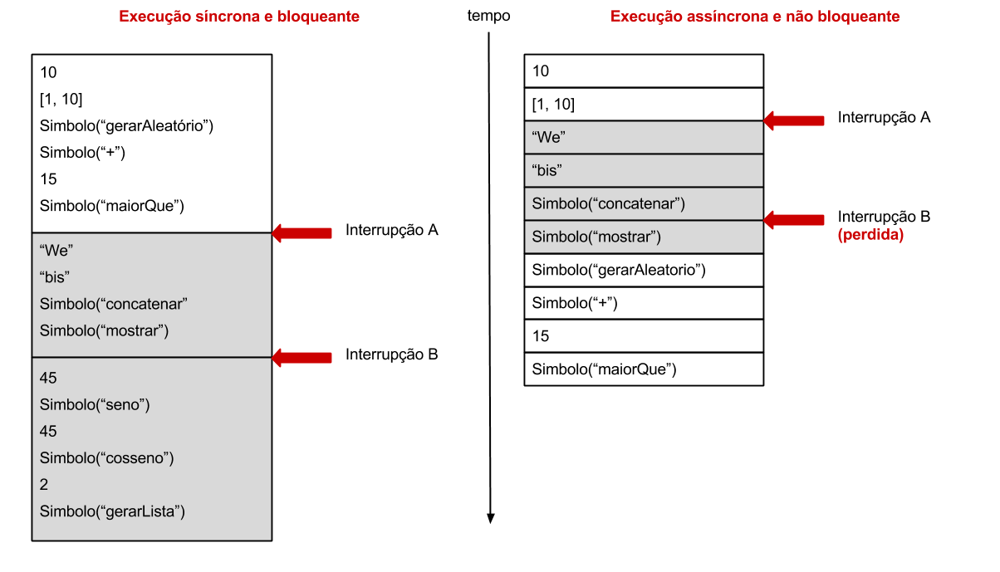
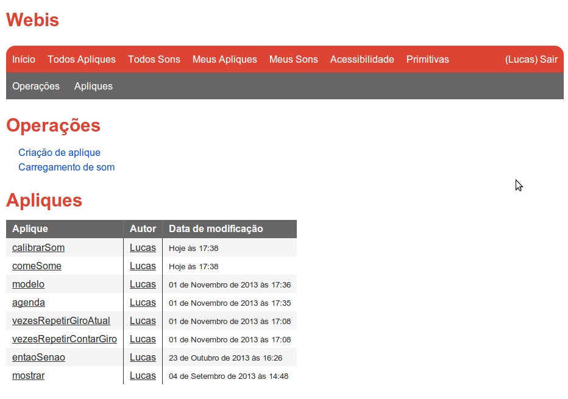
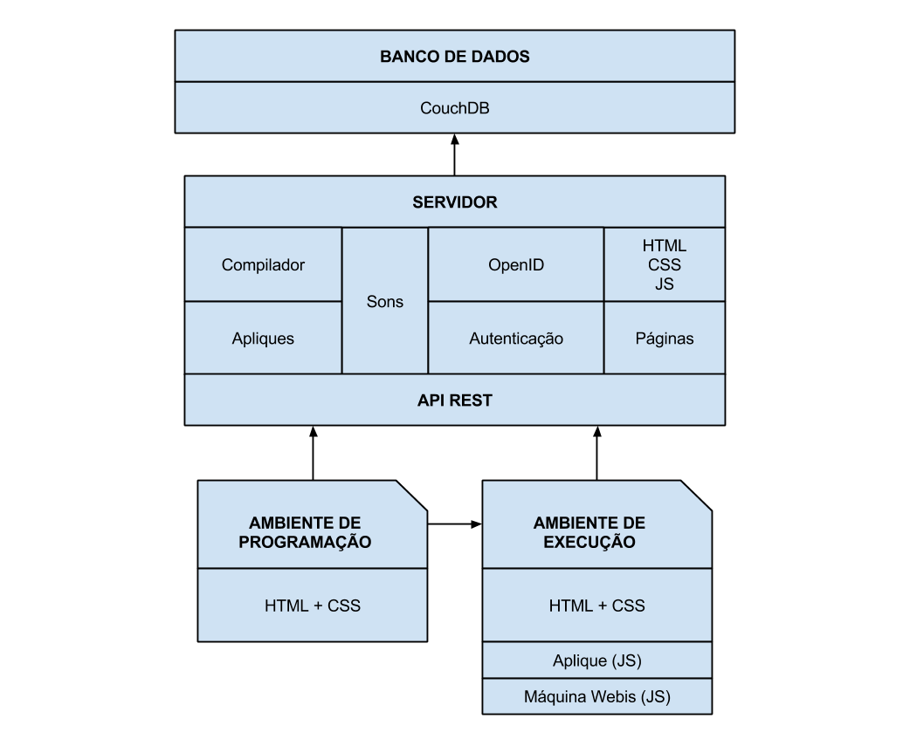
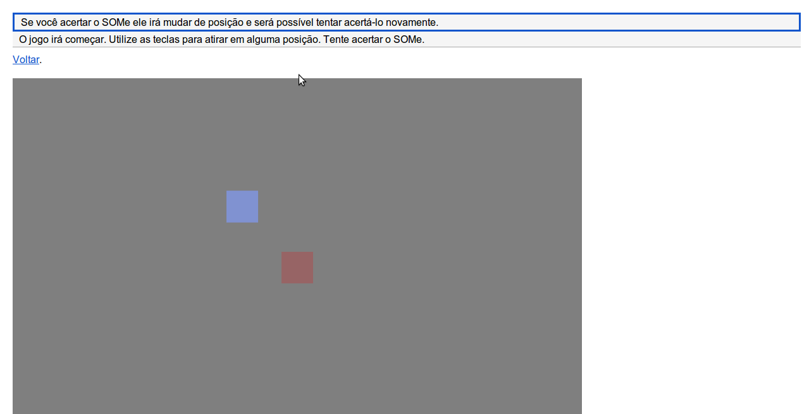
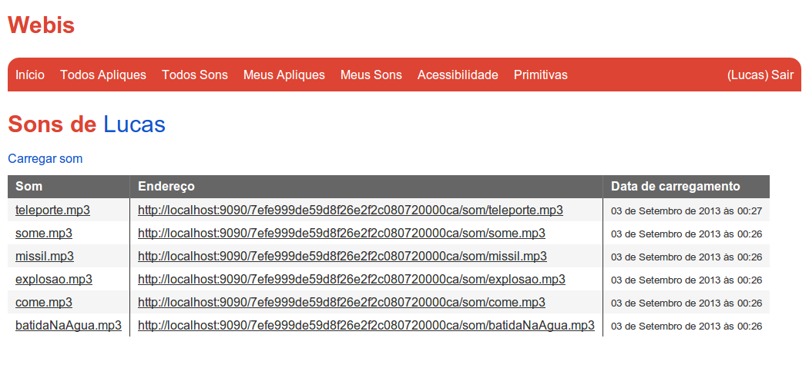
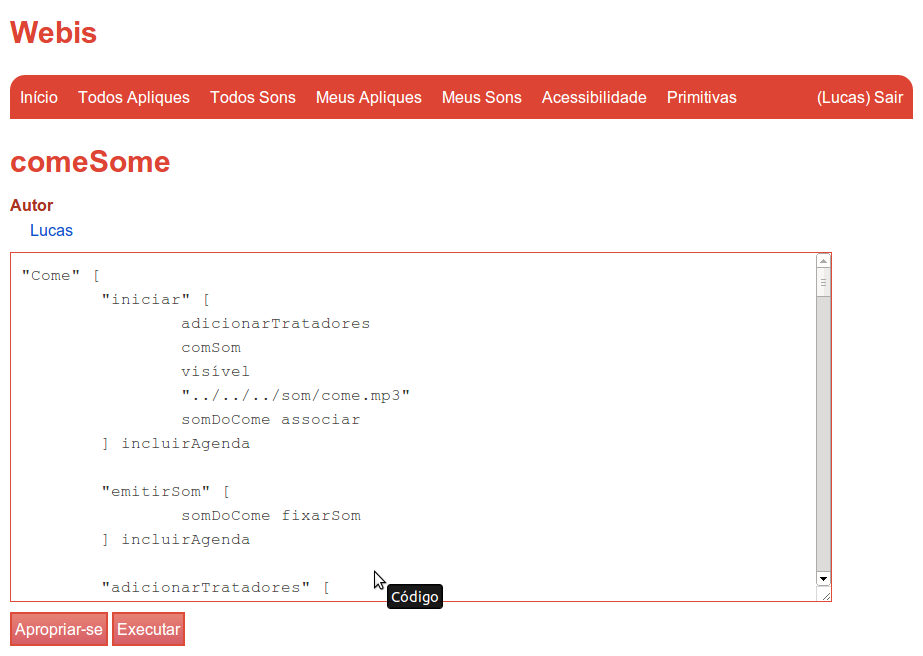
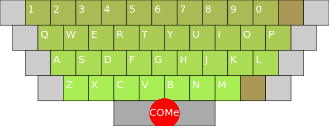
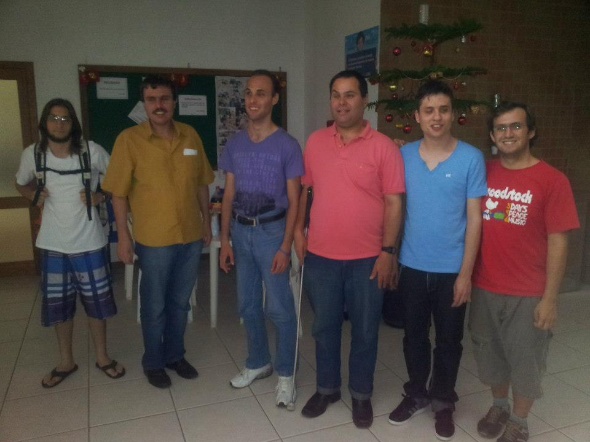

As dificuldades encontradas no aprendizado de uma primeira linguagem de programação estão relacionadas com a própria linguagem que é objeto de estudo e também com o ambiente de programação a ser utilizado. Boa parte das linguagens não possuem regras sintáticas e semânticas simples e tão pouco oferecem um ambiente de programação simplificado e intuitivo. Isso ocorre, pois na maioria dos casos, as linguagens de programação são desenvolvidas com um foco profissional e não de aprendizado Gomes; Mendes, .
Telis é uma linguagem e um ambiente de programação que busca resolver esse problema através de uma sintaxe simples e de uma abordagem que traz de forma natural na linguagem conceitos avançados de linguagens de programação. Entretanto, Telis não resolve o problema de pessoas com deficiência visual e que dependem da utilização de leitores de tela.
Este trabalho terá o objetivo de unir as principais características de Telis com uma acessibilidade mais adequada e que permita que pessoas com deficiência visual possam ter um maior poder de expressão. Essa junção resultará no desenvolvimento de uma nova linguagem e de um novo ambiente de programação Web, chamados de Webis.
Palavras-chave: linguagens de programação, Web, acessibilidade, pessoas com deficiência visual.
Agradecimentos
Gostaria de agradecer ao meu orientador Luiz Fernando Bier Melgarejo e co-orientador Giovani Pieri. Agradeço também aos membros da banca Ricardo Ghisi e Rosvelter Coelho da Costa. Por fim, agradeço aos meus companheiros do Edugraf Diego Abadan e Pablo Polônia.
Sumário
Lista de figuras
Lista de listagens
Introdução
As dificuldades encontradas no aprendizado de uma primeira linguagem de programação estão relacionadas com a própria linguagem que é objeto de estudo e também com o ambiente de programação a ser utilizado. Boa parte das linguagens não possuem regras sintáticas e semânticas simples e tão pouco oferecem um ambiente de programação simplificado e intuitivo. Isso ocorre, pois na maioria dos casos, as linguagens de programação são desenvolvidas com um foco profissional e não de aprendizado Gomes; Mendes, . Em decorrência desse fato, o primeiro contato com uma linguagem de programação pode ser muitas vezes traumático, fazendo com que o programador iniciante perca o interesse.
A linguagem Telis, desenvolvida no Laboratório de Software Educacional Edugraf, possui regras sintáticas e semânticas simples que podem ser facilmente assimiladas. Telis também é o nome do ambiente de programação oferecido para a linguagem. Um programa Telis pode ser executado em um navegador Web através do uso de applets Java Pieri et al, . Saviski , propôs o porte da linguagem Telis para execução nativa em navegadores Web, sem a necessidade da utilização de applets. A abordagem adotada foi a de gerar em JavaScript, linguagem interpretada nativamente pelos navegadores, o código escrito em Java da já existente máquina Telis.
O presente projeto terá embasamento no projeto desenvolvido por Saviski e consistirá do desenvolvimento de uma linguagem baseada em Telis e de uma máquina de execução escrita diretamente em JavaScript. O projeto também deverá ter grande foco no ambiente de programação que deverá ser executado nativamente por navegadores Web. O novo ambiente e a nova linguagem de programação a serem desenvolvidos serão chamados doravante de Webis.
A importância de um ambiente de programação acessível está no fato de possibilitar que qualquer pessoa possa aprender uma primeira linguagem de programação de maneira fácil e sem ter que se deparar com barreiras de acessibilidade. Garantir a acessibilidade é permitir que uma pessoa cega, por exemplo, possa utilizar o ambiente sem maiores dificuldades.
Projetos como o Eclipse Orion mostram que é possível realizar o desenvolvimento de um ambiente de programação que execute diretamente nos navegadores. O Eclipse Orion é um editor de texto para o desenvolvimento de aplicações Web escritas em HTML, JavaScript e CSS. Uma de suas principais ideias é fazer com que não só as aplicações executem na Web, mas também o próprio ambiente de programação.
A utilização da Web como plataforma se encaixa muito bem nos requisitos de um ambiente acessível. Além de ser um sistema distribuído de baixo acoplamento, a Web se mostra uma ótima plataforma para a execução de aplicações, pois permite a manipulação de recursos online e gera independência da aplicação para com o sistema operacional. A Linguagem de Marcação de Hipertexto 5 HTML5 introduz de maneira acessível novos recursos essenciais que ainda não eram suportados de forma padronizada pela Web. Isso garante ao usuário uma acessibilidade adequada e permite que ele se familiarize desde os primeiros passos no aprendizado de uma linguagem de programação com o desenvolvimento de aplicações que executem na Web.
Objetivo geral
Desenvolver uma linguagem de programação baseada em Telis e um ambiente acessível de programação. Tanto o ambiente de programação quanto os programas gerados pela linguagem deverão executar nativamente em navegadores Web, sem a necessidade da utilização de extensões. A linguagem deverá priorizar a acessibilidade de programadores e usuários cegos, possibilitando a utilização e manipulação de sons 3D que poderão ser usados para a criação de aplicações mais ricas e acessíveis.
Objetivos específicos
Definir uma linguagem de programação com sintaxe e semântica baseada em Telis;
Desenvolver o ambiente Web de execução para a linguagem definida;
Desenvolver o ambiente Web de programação para a linguagem definida;
Garantir a acessibilidade dos ambientes de execução e de programação desenvolvidos;
Disponibilizar na linguagem elementos que permitam a utilização e manipulação de sons 3D.
Dificuldades no aprendizado de linguagens de programação por pessoas com deficiência visual
O crescente número de linguagens de programação aliado com a alta demanda por profissionais que dominem essas linguagens fazem com que a procura por cursos que englobem a área tenha crescido muito. Além de existir um deficit de pessoas que saibam programar, a formação de novos programadores é um processo relativamente difícil, principalmente quando o aluno é uma pessoa com deficiência visual. Em geral, a dificuldade intrínseca no aprendizado de uma linguagem de programação já torna todo processo bastante complexo. Visando diminuir a dificuldade envolvida neste aprendizado, os cursos, livros, artigos e outros recursos educativos fazem bastante uso de imagens, diagramas e outros tipos de abstrações que podem facilitar a compreensão de determinado conceito Smith et al, . Entretanto, isso gera uma barreira extra de dificuldade para alunos com deficiência visual.
As imagens servem justamente para facilitar e agilizar a explicação de um determinado conceito que seria compreendido com mais dificuldade caso fosse explicado textualmente. Porém, no caso de alunos com deficiência visual e que utilizam leitores de tela, a leitura de um texto informando sobre o que a imagem representa se torna necessária. O maior problema é que nem todas imagem irão possuir uma representação textual alternativa e nesses casos, o aluno não tem acesso total aos conteúdos educativos.
Outra barreira extra encontrada por alunos com deficiência visual está no aspecto que envolve os sentidos sensoriais utilizados no aprendizado. A audição, ao contrário da visão, não é sintética. Isso significa que no caso de um programa de computador, caso aluno tenha interesse em uma parte específica do programa, ele precisará percorrer sequencialmente todo o conteúdo existente até alcançar a parte de seu interesse. Por isso, linguagens com construções sintáticas longas e complexas dificultam ainda mais o aprendizado do aluno.
Linguagens como Logo, Smaltalk e o próprio Telis, criadas através de uma abordagem educacional e que visam se aproximar do usuário final, facilitam o aprendizado de programadores iniciantes. O principal problema de algumas dessas linguagens para alunos que necessitem da utilização de leitores de tela é o fato de serem bastante focadas em programação visual Sánchez; Aguayo, .
Além dessas, outra dificuldade encontrada por pessoas com deficiência visual é em relação a própria acessibilidade, seja dos livros, apostilas e conteúdos eletrônicos ou dos próprios ambientes de programação. Funcionalidades não acessíveis através do teclado, desorganização de conteúdo, falta de representação alternativa para elementos não textuais e conteúdos não objetivos são apenas algumas das dificuldades encontradas por pessoas que dependem de leitores de tela. Por isso, não basta apenas que exista uma linguagem de programação que permita que uma pessoa com deficiência visual possa se expressar de forma adequada para construir os seus programas de computador. Mais do que isso, é necessário que exista um ambiente de programação que ofereça uma acessibilidade adequada.
Definição da linguagem baseada em Telis
A linguagem Telis que vem sendo desenvolvida desde Pieri, pelo Edugraf, permite, através de construções sintáticas e semânticas simples, que o programador tenha um grande poder de expressão e possa expor de forma natural conceitos avançados como orientação a objetos, paralelismo, programação distribuída, programação de eventos e outros.
A linguagem Webis será criada a partir da linguagem Telis. As construções léxicas e sintáticas da nova linguagem serão muito semelhantes às mesmas existentes em Telis. A diferença entre as duas linguagens estará principalmente relacionada com os novos requisitos da linguagem Webis. Por exemplo, como Webis deverá ter suporte à manipulação de sons 3D, será necessário que esses recursos sejam incorporados à nova linguagem.
Outra diferença entre a linguagem Telis e Webis estará na forma de comunicação utilizada. Em Telis é possível realizar a comunicação direta e imperativa da mesma forma que existe na programação orientada a objetos. É possível também realizar a comunicação através de interrupções baseadas em tuplas. Webis usará apenas a segunda forma de comunicação.
A linguagem Webis, portanto, deverá ser constituída pela junção de um subconjunto de funcionalidades da linguagem Telis com um conjunto de novas funcionalidades específicas para a linguagem Webis. A sintaxe e semântica das duas linguagens, entretanto, será praticamente a mesma, tendo apenas algumas pequenas diferenças.
Com exceção da , que tratará de conceitos novos que existirão apenas na linguagem Webis, as demais seções deste capitulo tratarão dos conceitos e funcionalidades provenientes da linguagem Telis e que serão incorporados ao Webis.
Gramática
A linguagem Telis pode ser expressa através de uma gramática livre de contexto do tipo LL. Gramáticas do tipo LL possuem um conjunto adicional de restrições que permitem a análise por um parser preditivo determinístico, ou seja, sem backtracking. Analisadores do tipo LL possuem ainda um parâmetro k chamado de lookahed. Esse parâmetro indica a quantidade de símbolos que são levados em consideração em um passo do algoritmo. Quanto maior é o valor de k mais lento é o processo de análise e, em contra partida, menor é o número de não fatorações que uma produção da gramática pode conter. Uma gramática é dita fatorada se ela não possui produções que derive sequências que inicie com o mesmo token por mais de um caminho.
Considerando um exemplo onde k é igual a um, então a gramática não pode ter nenhum símbolo não fatorado. Já se k é igual a dois, então a gramática pode conter apenas produções com no máximo um símbolo não fatorado.
A gramática do Telis descrita em EBNF é mostrada na .
programa ::= (palavra | lista | <COMENTARIO>)*
palavra ::=
atribuicao |
instanciacao |
simbolo |
texto |
numero |
operador |
booleano
lista ::=
<ABERTURA_DE_LISTA>
(palavra | lista)*
<FECHAMENTO_DE_LISTA>
simbolo ::= <IDENTIFICADOR>
atribuicao ::= <IDENTIFICADOR> <ASSOCIAR>
instanciacao ::= <IDENTIFICADOR> <NOVO>
texto ::= <TEXTO>
numero ::= <NUMERO>
operador ::= <OPERADOR>
booleano ::= <BOOLEANO>
Gramática do Telis.
Os itens entre parênteses angulares são definidos através de expressões regulares e representam tokens provenientes da análise léxica ().
Em gramáticas do tipo LL(k), o valor mínimo de k é dependente da linguagem. Existem linguagens onde nem sempre é possível construir uma gramática que seja completamente fatorada, ou seja, onde k é igual a um. Esse é o caso do Telis que possui uma gramática do tipo LL(2). A não fatoração no Telis ocorre na produção palavra, pois nela é possível que um <IDENTIFICADOR> seja derivado por três caminhos diferentes, pelas produções simbolo, atribuicao e instanciacao.
A não fatoração gera um não determinismo, pois o analisador não sabe por qual caminho seguir quando encontra um <IDENTIFICADOR>. Para resolver esse problema é necessário que o algoritmo possa receber como entrada os dois próximos tokens e não apenas um. Com isso, ao perceber um <IDENTIFICADOR>, o analisador deverá ver qual é o próximo token para saber por qual produção a derivação irá seguir.
Apesar da gramática do Telis requerer um analisador do tipo LL(2) e este ser mais lento se comparado a um do tipo LL(1), isso não vem a ser um problema devido a boa performance dos computadores e analisadores atuais.
Pilha
As pilhas são utilizadas no Telis para armazenar valores temporários e permitir a passagem de parâmetros para primitivas () e agendas (). Cada ator () possui uma pilha própria e exclusiva. Portanto, um ator não pode acessar ou manipular a pilha de outro. Quando um valor é colocado na pilha, ele fica disponível para ser utilizado por comandos futuros. Caso um novo valor seja empilhado, então a pilha passará a conter dois valores e o valor mais recente deverá estar no topo. Por exemplo, ao final da execução do código da , a pilha conterá dois valores e o valor 30 deverá estar no topo.
5 30
Armazenamento de dois valores na pilha.
Os valores contidos na pilha podem ser consumidos por comandos Telis. Além disso, os comandos também podem adicionar novos valores na pilha. A mostra a execução de um código Telis onde inicialmente são empilhados os valores 10 e 5. Em seguida é executado o comando / que realiza a divisão entre dois números. O comando irá consumir os dois elementos da pilha, realizar o cálculo e, ao final, irá empilhar o resultado 2.
10 5 /
Divisão de números da pilha e empilhamento do resultado.
Um fator importante em relação aos elementos da pilha é que a ordem deles interfere diretamente no resultado. No caso da , se o operando que estivesse no topo da pilha fosse o 10, ao invés do 5, então o resultado não seria 2, mas sim 0,5.
Primitivas
As primitivas são os comandos básicos fornecidos pela linguagem. A sintaxe da linguagem Telis possui basicamente dados e símbolos. Um símbolo pode ser uma primitiva, um operador, uma variável, uma agenda ou até mesmo um ator. Para o Telis não existe diferença entre primitivas e operadores e ambos são tratados da mesma maneira. Por isso, quando for falado em primitivas, deverá ser levando em consideração também os operadores.
As primitivas constituem os blocos básicos do Telis. Todas primitivas podem consumir e produzir valores na pilha. Caso uma determinada primitiva produza algum resultado, então este deve ser empilhado. A mostra um exemplo de utilização das primitivas Telis. No exemplo são utilizadas as primitivas gerarAleatório e frente. A primitiva gerarAleatório irá gerar um número entre 1 e o valor que estiver no topo da pilha. Por exemplo, se ao executar a primitiva gerarAleatório, o número 10 estiver no topo da pilha, então a primitiva irá gerar um número entre 1 e 10. O número gerado será colocado no topo da pilha. Já a primitiva frente consome o valor que estiver no topo da pilha e faz com que o ator se desloque para a frente de acordo com o valor consumido.
Na , a primitiva gerarAleatório irá consumir da pilha o valor 100 e irá produzir um número aleatório entre 1 e 100. O resultado será, então, empilhado e posteriormente será consumido pela primitiva frente. Deve-se observar na listagem a capacidade das primitivas consumirem da pilha valores empilhados por primitivas previamente executadas.
100 gerarAleatório frente
Geração de um número aleatório e deslocamento do ator para frente.
Variáveis e escopos
O Telis possui um escopo de variáveis bastante simples que é restrito a cada ator. Cada ator possui o seu escopo onde pode escrever e ler variáveis. A escrita de variáveis é realizada através da primitiva associar que consume dois parâmetros da pilha: o valor e o nome da variável. A primitiva associar simplesmente associa um nome a um valor e guarda a associação na tabela de variáveis do ator. Caso a variável já exista, então o valor associado a ela é substituído pelo novo valor. Já para ler uma variável, basta utilizar o seu nome. A leitura de uma variável consiste em colocar o seu valor na pilha para que ele possa ser consumido por comandos futuros.
A mostra um exemplo de utilização de variáveis. Na primeira linha é definida a variável deslocamento contendo o valor 50. Já na segunda linha, a variável é lida e colocada na pilha para ser consumida pela primitiva frente.
50 deslocamento associar
deslocamento frente
Associação e leitura de variáveis.
O Telis permite também que listas de nomes e valores sejam associadas. Isso facilita a associação de diversas variáveis de uma só vez, bem como a associação de variáveis passadas como parâmetro em uma agenda ou na instanciação de um ator. A mostra a associação de listas de nomes e valores. Após a execução do comando, o ator terá disponível três novas variáveis: x, y e z, representando os valores 10, 20 e 30, respectivamente.
[10 20 30] [x y z] associar
Associação de listas de nomes e valores.
Uma particularidade no escopo do Telis ocorre quando são executadas as primitivas de repetição, como paraCada, vezesRepetir, entãoSenão e outras. Quando essas primitivas são executadas, o Telis mantém e atualiza automaticamente a variável giroAtual que indica a atual iteração da primitiva de repetição. O programador não tem acesso à variável giroAtual e caso queira saber o seu valor, deverá utilizar primitiva contarGiro.
A mostra um exemplo de utilização da primitiva contarGiro. A cada iteração da primitiva vezesRepetir, a iteração atual é obtida e mostrada na tela. Como o código associado à primitiva vezesRepetir será executado 10 vezes, então serão mostrados na tela os números de 1 a 10.
[
contarGiro mostrar
] 10 vezesRepetir
Execução da primitiva vezesRepetir e contagem da iteração atual.
Modelos, agendas e atores
No Telis existe o conceito de ator. Cada ator é uma unidade independente que possui o seu próprio contexto de execução. Um ator é um exemplar de um modelo que por sua vez é composto por agendas. Já as agendas definem comportamentos inerentes ao modelo em questão. Pode-se relacionar modelos, agendas e atores com conceitos provenientes da programação orientada a objetos. Um modelo, por exemplo, pode ser relacionado com o conceito de classe. Da mesma forma, agendas podem ser relacionadas com métodos e atores com objetos. Entretanto, é importante deixar claro que um ator, em sua essência, é diferente de um objeto, uma vez que cada ator executa de forma paralela aos outros atores.
Um programa Telis em execução nada mais é do que a execução e interação dos diversos atores que fazem parte do programa. Cada ator é executado separadamente em sua própria thread e isso permite que os programadores Telis explorem de forma natural o paralelismo. Desde os primeiros passos no Telis os alunos já podem construir programas concorrentes, e podem fazer isso de forma simples e intuitiva. Além de terem um espaço de execução próprio, os atores também possuem o seu próprio escopo de variáveis e a sua própria pilha. Portanto, nenhum recurso é compartilhado entre os atores.
Na execução inicial de um programa Telis, é instanciado um ator de um modelo que deve conter todo o código do programa. O ator criado é executado e deve ser responsável pela criação, direta ou indireta, de todos modelos e atores que serão utilizados durante a execução do programa. Cada ator pode instanciar tantos outros atores quanto for necessário. Além disso, os atores podem, em tempo de execução, definir novos modelos e novas agendas locais.
UmModelo novo
Instanciação de um ator.
As agendas definidas em um modelo contém códigos de execução. No Telis todo modelo possui uma agenda especial, a agenda iniciar. Toda vez que um ator é criado, a sua agenda iniciar é executada. A agenda iniciar existirá mesmo que o programador não tenha definido ela explicitamente.
No Telis os modelos e agendas são criados dinamicamente, em tempo de execução. Para realizar a criação de agendas e modelos são utilizadas as primitivas incluirAgenda () e incluirModelo (), respectivamente.
"mostrarTexto" [
"texto" mostrar
] incluirAgenda
mostrarTexto
Definição e execução de uma agenda local.
"UmModelo" [
"iniciar" [
calcular
] incluirAgenda
"calcular" [
5 2 +
] incluirAgenda
] incluirModelo
Definição de um modelo e suas agendas.
Apliques
Um programa Telis recebe o nome de aplique e é formado apenas pelos elementos sintáticos disponíveis na linguagem. Esses elementos podem ser listas, textos, números, booleanos, operadores e símbolos. Essa característica evidencia o fato de que a criação de um programa Telis não requer nenhuma organização estrutural. Um programa Telis, portanto, pode ser inteiramente escrito sem que exista a necessidade de se criar qualquer modelo ou agenda. Vale lembrar que a definição de modelos no Telis é feita através da primitiva incluirModelo, ou seja, é feita em tempo de execução. Entretanto, o Telis é uma linguagem orientada a objetos e é desejável que as várias partes que compõem um programa sejam separadas através de modelos. Assim, uma organização estrutural focada em uma abordagem orientada a objetos que poderia ser aplicada a um programa Telis é ilustrada na .
"UmModeloA" [
"iniciar" [
agendaA1
] incluirAgenda
"agendaA1" [
UmModeloB novo
{ Mais código Webis... }
] incluirAgenda
"agendaA2" [
{ Código Webis... }
] incluirAgenda
] incluirModelo
"UmModeloB" [
"agendaB" [
{ Código Telis... }
] incluirAgenda
] incluirModelo
UmModeloA nova
Exemplo de um programa Telis orientado a objetos.
Modelo de execução
O modelo de execução do Telis é não bloqueante. Isso significa que os atores podem receber interrupções enquanto estiverem em execução. Quando um ator recebe uma interrupção, ele deve parar de executar o seu código e deve tratar a interrupção em questão. No modelo de execução do Telis, interrupções podem ser perdidas. Quando um ator estiver tratando uma determinada interrupção e outra surgir, então a interrupção que surgiu deve ser descartada.
A execução de um ator começa quando a sua agenda iniciar for executada. Todo ator possui a agenda iniciar, mesmo que o programador não a tenha definido explicitamente. Quando a agenda iniciar é chamada, são passados para ela os parâmetros disponíveis na pilha do ator que realizou a instanciação. Por exemplo, se um ator A instanciar um ator B, então será passado como parâmetro da agenda iniciar do ator B os valores disponíveis na pilha do ator A. Vale lembrar que não existe compartilhamento de dados entre os atores. Por isso, os parâmetros passados na instanciação são copiados e, portanto, duplicados.
A primitiva descansar interfere diretamente no modelo de execução do Telis. Ao executar a primitiva, o ator tem a sua execução interrompida por um determinado período de tempo que é passado como parâmetro na pilha. Embora possa estar parado em função da primitiva descansar, o ator pode continuar recebendo interrupções. É importante que se respeite ao máximo possível o tempo de descanso estipulado. Supondo que o tempo de descanso utilizando junto a primitiva descansar seja de 2 segundos e que após 1 segundo de descanso o ator receba uma interrupção que dure 1.5 segundos. Então nesse caso, ao final da execução da interrupção, o ator já terá descansado 2.5 segundos. Com isso, é necessário que, após o término da interrupção, o ator volte a executar imediatamente, uma vez que o tempo de descanso estipulado já terá sido cumprido.
Através do exemplo citado anteriormente é possível perceber que o modelo de execução do Telis garante que o ator descanse pelo menos o tempo passado como parâmetro para a primitiva descansar. Entretanto, observa-se que não há garantias de que o ator não vá descansar por um tempo maior daquele que foi estipulado, uma vez que interrupções podem surgir e virem a executar por mais tempo do que o tempo de descanso.
Quando um ator termina de executar o seu código, ou seja, quando encerra a execução da agenda iniciar, ele ainda pode receber interrupções. Um ator somente deixará de receber interrupções caso a primitiva suicidar seja utilizada. A primitiva suicidar faz com que o ator seja completamente excluído do sistema de execução. Ao suicidar, o ator não poderá mais executar nenhum código ou receber interrupções. Além disso, o som e o gráfico que eventualmente estejam associados ao ator serão removidos.
Tratadores de interrupções
As interrupções no Telis são utilizadas tanto para a geração de estímulos quanto para a troca de mensagens entre os atores. As interrupções são tratadas assincronamente e devem respeitar o modelo de execução do Telis. Conforme mostrado na , as interrupções podem ser recebidas durante a execução do ator. As interrupções também podem ser perdidas caso surjam enquanto outra já estiver sendo tratada.
Estímulos e troca de mensagens entre atores são tratados como interrupções broadcast, ou seja, todos os atores instanciados recebem todas as interrupções. Os atores, entretanto, podem tratar somente as interrupções que forem de seu interesse. Para isso, é utilizada a primitiva seDito. Através dessa primitiva, os atores podem registrar um tratador associado a um filtro. A primitiva seDito funciona como qualquer outra e, por isso, tanto o filtro quanto o tratador são parâmetros buscados na pilha. O filtro é utilizado pelo Telis para verificar se determinada interrupção deve ou não ser tratada. Já o tratador é o código Telis a ser executado caso a interrupção precise ser tratada.
Os filtros associados aos tratadores podem conter valores ou tipos genéricos. A tarefa do Telis é a de acionar os tratadores dos filtros que casarem com a mensagem recebida em uma interrupção. A mostra alguns exemplos de filtros que podem ser utilizados. O primeiro filtro irá casar com interrupções cuja mensagem seja composta pelo número 10 e pelo texto "Webis". Já o segundo filtro ilustra a utilização de um tipo genérico. O segundo filtro irá casar com mensagens compostas por: um número qualquer, um texto qualquer e o número 7, exatamente nessa ordem. No caso do segundo filtro, interrupções contendo mensagens como [10 "Linguagem" 7] ou [0 "Programação" 7] serão tratadas.
[10 "Webis"]
[Número Texto 7]
Filtros para interrupções.
Quando um tratador é executado, ele recebe como parâmetro a mensagem recebida na interrupção. A passagem de parâmetros é especialmente útil nos casos em que existem elementos genéricos nos filtros. Por exemplo, no caso do segundo filtro mostrado na , pode ser interessante para o tratador receber os valores genéricos que casaram com o filtro.
Podem ser adicionados tantos filtros e tratadores quanto for desejado. Por isso, é possível que uma mesma interrupção case com mais de um filtro de um mesmo ator. Assim, mais de um tratador do mesmo ator pode ser acionado para uma mesma interrupção.
Estímulos
Os estímulos são eventos gerados pelo Telis para notificar o programador de determinado acontecimento. O Telis pode gerar estímulos para ações realizadas com o teclado, por exemplo. Os estímulos de teclado são acompanhados de mensagens compostas por quatro valores, sendo eles: o símbolo TECLADO, um texto que pode ser "teclaPressionada", "teclaSolta" ou "teclaRepetida", um número que representa o código decimal da tecla utilizada e um outro número que indica quais teclas modificadoras foram utilizadas. Nesse último caso, o número é o somatório dos valores associados às teclas modificadoras utilizadas. O Telis associa um valor para cada tecla modificadora, das quais a tecla shift é associada ao valor 1, a tecla ctrl ao valor 2 e a tecla alt ao valor 8.
A mostra alguns exemplos de mensagens de interrupções enviadas pelo Telis para estímulos de teclado. No primeiro caso, o estímulo é gerado, pois a tecla A (código 65) foi solta. Já no segundo exemplo, a tecla Z (código 90) foi pressionada em conjunto com as teclas modificadores shift (valor 1) e alt (valor 8).
[TECLADO "teclaSolta" 65 0]
[TECLADO "teclaPressionada" 90 9]
Filtros para estímulos do teclado.
A mostra como pode ser adicionado um tratador para um estímulo de teclado. O tratador será executado caso o ator receba um estímulo do teclado onde qualquer tecla foi pressionada mais de uma vez ("teclaRepetida"). Deve-se observar que é utilizado um tipo genérico tanto para o código da tecla quanto para o somatório das teclas modificadoras. Nesse caso, os tipos genéricos são utilizados, pois o ator deseja receber o estímulo independentemente de quais teclas foram utilizadas.
[TECLADO "teclaRepetida" Número Número]
[
{ Código do tratador ... }
] seDito
Adição de um tratador para estímulos de teclado.
Troca de mensagens entre atores
A troca de mensagens entre atores no Telis ocorre de forma assíncrona através de interrupções. Assim como qualquer interrupção, as mensagens trocadas entre atores são recebidas por todos. O ator pode utilizar filtros para selecionar quais tipos de mensagens ele deseja receber.
A troca de mensagens entre atores utilizando o sistema de interrupções traz algumas dificuldades para os programadores, pois por se tratar de uma interrupção, as mensagens podem ser perdidas. Dessa forma, caso o programador precise ter garantia de entrega, será necessário que ele estabeleça um protocolo para realizar a tarefa. Já envio de mensagens broadcast é uma característica desejável em alguns casos, mas não em outros. Ela é desejável nos casos onde é necessário que vários atores recebam uma mesma mensagem e indesejável nos casos em que é necessário estabelecer uma comunicação somente de um para um. No segundo caso, os atores também precisam estabelecer um protocolo para garantir que outros atores não tratem as mensagens que não lhe são direcionadas.
O tratamento de interrupções que correspondem a mensagens é feito da mesma forma como ocorre com os estímulos (). É necessário utilizar a primitiva seDito, fornecendo como parâmetro o filtro e o tratador para a interrupção. Já o envio de mensagens é feito através da primitiva dizer que recebe como parâmetro na pilha a mensagem a ser dita.
Para ilustrar o funcionamento da troca de mensagens entre atores será considerado um caso onde existem dois atores, um cujo identificador é "ator1" e outro cujo identificador é "ator2". No caso em questão, o "ator2" precisa enviar uma mensagem para que o "ator1" ande por uma determinada distância. A e mostram como o problema poderia ser resolvido.
A mostra o código adicionado pelo "ator1" para que ele possa receber a mensagem do "ator2". Deve-se reparar nos valores utilizados no filtro. O primeiro valor é usado para que apenas o "ator1" trate a mensagem. Outros atores que queiram tratar o mesmo tipo de mensagem poderão utilizar o mesmo filtro, com a diferença do primeiro valor que deverá ser modificado de acordo com o identificador do ator em questão. Já o segundo valor é utilizado para que o ator que receber a mensagem saiba do que ela se trata. O filtro utilizado poderia ser generalizado para tratar outros tipos de mensagens. Supondo que o ator também queira tratar mensagens com a solicitação para que ele gire, então bastaria adicionar um novo tratador com um filtro semelhante ao utilizado na listagem, porém trocando o valor "andar" para "girar", por exemplo. Já o último valor utilizado no filtro da listagem indica a distância que deve ser percorrida pelo ator. Nota-se que se trata de um valor genérico.
A mostra outra característica importante das interrupções que é a capacidade do tratador receber como parâmetro na pilha uma lista contendo os valores recebidos na mensagem. No caso em questão, o último valor recebido na mensagem é de interesse do ator e, por isso, o ator utiliza a primitiva último, que obtém o último valor de uma lista, e associa o valor obtido à variável distancia. Por fim, o ator que recebeu a mensagem utiliza o comando frente, passando como parâmetro a distância recebida.
["ator1" "andar" Número]
[
último distancia associar
distancia frente
] seDito
Adição de um tratador para recebimento de mensagens.
Na é mostrado o código executado pelo "ator2" para enviar a mensagem ao "ator1". É interessante perceber que se existisse um "ator3" e fosse desejado enviar a mensagem para ele ao invés de enviar ao "ator1", então bastaria trocar o primeiro valor enviado na mensagem para "ator3".
["ator1" "andar" 120] dizer
Envio de mensagens para os atores.
Sistema de som
Nas seções anteriores deste capítulo foram tratados os conceitos da linguagem Telis que serão incorporados à linguagem Webis. Já nesta seção serão tratados de conceitos novos que existirão apenas na linguagem Webis.
Um aplique Webis em execução será composto por um sistema de coordenadas cartesianas onde atores estarão distribuídos. Uma das características fundamentais do Webis será permitir que os atores possuam, além da representação gráfica, uma representação sonora equivalente. Com isso, sons poderão ser associados aos atores e sempre que um ator se movimentar no sistema de coordenadas, o sistema de som deverá refletir a mudança de modo que seja possível perceber sonoramente a movimentação do ator. Ou seja, as primitivas de posicionamento e movimentação como frente, direita, andarPara e outras, deverão provocar mudanças tanto no sistema gráfico quanto no sonoro.
O Webis disponibilizará algumas primitivas sonoras que permitirão o ator manipular sons. A primitiva fixarSom permitirá associar um som a um ator. Quando executada, essa primitiva obterá um parâmetro na pilha que indicará o endereço de um som que deverá ser associado ao ator. Um característica importante é que ao ator executar a primitiva, o som começará a ser tocado e a execução do ator seguirá normalmente, ou seja, o ator não será bloqueado. Após a finalização do som, o ator ficará em silêncio até que outro som seja fixado. Caso o ator deseje que o som seja tocado repetidamente, então bastará utilizar a primitiva fixarSomContínuo.
Por padrão, um ator iniciará em silêncio e mesmo que um som seja fixado, o ator permanecerá em silêncio. Para que um som fixado seja tocado será necessário que o ator utilize a primitiva comSom. Essa primitiva fará com o ator passe a emitir sons, caso possua algum associado a ele. Existirá também a primitiva semSom que terá o objetivo de silenciar o ator. Se o ator estiver com um som fixado, então a utilização da primitiva semSom fará com que o ator pare imediatamente tocar o som. Já se o ator não estiver com nenhum som fixado, então a primitiva semSom não terá nenhum efeito imediato, porém caso o ator execute futuramente a primitiva fixarSom ou fixarSomContínuo, então o som fixado não será tocado.
No sistema sonoro do Webis também existirá o elemento microfone. O microfone representará o elemento que realiza a captura das fontes de som existentes no sistema sonoro e, assim como os atores, também poderá ser movimentado. A movimentação do microfone será útil, por exemplo, para a criação de jogos onde o personagem que representa o jogador se movimenta pelo sistema de coordenadas. Para que o microfone seja movimentado, será necessário que algum ator o pegue. Para isso, bastará que o ator utilize a primitiva pegarMicrofone. Quando um ator estiver de posse do microfone, qualquer movimentação ou posicionamento feito no ator será refletido no microfone e consequentemente na saída do som para o usuário. Mesmo que um ator já tenha pego o microfone, outros atores também poderão utilizar a primitiva. O microfone será sempre de posse do último ator que utilizar a primitiva.
O sistema sonoro também contará com a primitiva calibrarSom. Essa primitiva receberá como parâmetro na pilha um número que indicará o valor a ser utilizado na calibração do som. O valor calibrado influenciará no efeito da distância entre a fonte de som e o ponto de captação (microfone). O valor padrão de calibração será de 0,01 e quanto maior o valor maior parecerá a distância entre uma fonte de som e o microfone.
HTML5 e JavaScript
A Web é baseada em três importantes pilares: o Identificador Uniforme de Recursos URI, o Protocolo de Transferência de Hipertexto HTTP e a Linguagem de Marcação de Hipertexto HTML Ferreira; Eis, . Neste projeto existirá um grande foco no terceiro pilar, em especial na mais nova versão do HTML, o HTML5.
O HTML5 não é apenas uma nova especificação para uma linguagem de marcação, mas sim um conjunto completo de tecnologias com novas funcionalidades. O objetivo das novas especificações é fazer da Web uma plataforma completa e aberta, permitindo que as tradicionais aplicações desktop possam ser inteiramente convertidas em aplicações Web. A vantagem disso é a existência de um padrão aberto, onde uma aplicação poderá ser desenvolvida independentemente do dispositivo em que será executada. Tudo que o dispositivo precisará é de uma navegador Web com suporte ao HTML5.
Dentre as principais especificações incorporadas ao HTML5, destacam-se a Folha de Estilos em Cascata 3 CSS3 e as novas APIs do JavaScript, como a Web Audio API e a especificação de Web Workers. O JavaScript terá um papel fundamental no desenvolvimento da máquina Webis. Nesse capítulo serão discutidos conceitos importantes do JavaScript e do HTML5 para que se possa compreender melhor os mecanismos utilizados pela máquina Webis ().
Modelo de execução JavaScript em navegadores Web
O JavaScript, utilizado a partir de um navegador Web, possui fundamentalmente um fluxo único de execução, fazendo com que não exista execução concorrente de código. Mais adiante será mostrado que o HTML5 trouxe o conceito de Web Workers que permite criar vários fluxos de execução. Entretanto, na abordagem atual será deixado de lado a utilização dos Web Workers e será considerado um fluxo único de execução associado a um único ator Webis.
Quando um trecho de código JavaScript é executado, ele não será interrompido até que seja finalizado. Durante a execução de um código JavaScript interrupções podem ser disparadas. O código associado a cada uma dessas interrupções será executado, um de cada vez, somente depois que o código atual em execução terminar. O modelo de execução JavaScript é dito bloqueante, pois interrupções não param a execução atual de código. Em vez disso, as interrupções são guardadas para que possam ser chamadas após o término da execução atual Resig; Bibeault, . Por interrupções pode-se considerar tanto o tratamento de eventos () gerados pelo navegador quanto o disparo de temporizadores ().
Eventos
A criação de eventos assíncronos pode ocorrer de diversas formas. O JavaScript, executado em um navegador Web, permite o uso da programação dirigida a eventos. Nesse sentido, o navegador gera eventos sempre que algo que possa ser de interesse do programador aconteça. Esses eventos estão sempre associados a algum elemento e podem ser adicionados diversos tratadores para cada um deles. Por exemplo, um evento pode ser o clique do mouse em um determinado botão, o carregamento de um documento ou até mesmo o pressionamento de uma tecla.
A adição de um tratador para um determinado evento de um elemento pode ser feita através do método addEventListener (). Esse método irá receber dois parâmetros: o tipo do evento e uma função que contém o código do tratador. Por sua vez, quando chamado, o tratador receberá como parâmetro um objeto que representa o evento em questão.
elemento.addEventListner("click", function (evento) {
// código do tratador...
});
Criação de um tratador de evento JavaScript.
Temporizadores
Além de eventos, também é possível utilizar temporizadores para executar trechos de código de forma assíncrona. Da mesma forma que ocorre com os eventos, os temporizadores somente podem ser executados quando não existir nenhum outro trecho de código em execução. Se no momento em que um temporizador tiver que ser executado já existir algum código em execução, então a execução do temporizador deverá ser adiada.
Para fins explicativos serão considerados dois possíveis acontecimentos associados aos temporizadores: a ativação e o disparo. A ativação ocorre quando o temporizador é criado. Já o disparo ocorre após a ativação, onde a função de retorno, passada como parâmetro durante a ativação, é executada.
Existem dois tipos de temporizadores: aqueles que são disparados apenas uma única vez após um determinado período de tempo e aqueles que são disparados continuamente a cada determinado período de tempo. Ambos tipos de temporizadores podem ser cancelados. Para criar um temporizador que é disparado uma única vez, utiliza-se a função setTimeout, presente no objeto global window. De forma análoga, para criar um temporizador que é disparado continuamente a cada intervalo de tempo, utiliza-se a função setInverval.
var identificador = window.setTimetout(function () {
// código do tratador...
}, 1000);
Ativação de um temporizador JavaScript.
A mostra a ativação de um temporizador que, quando disparado, irá executar a função que é passada como parâmetro. O segundo parâmetro indica o tempo, a partir do momento da ativação, até que o temporizador seja efetivamente disparado. No caso em questão, o tempo de espera até o disparo será de 1 segundo (ou 1000 milissegundos). Destaca-se o fato de que esse tempo de espera não é garantido. Por exemplo, se o código que realizou a ativação do temporizador continue a executar por mais de um segundo, então o temporizador ativado terá seu disparo adiado. Como já visto anteriormente, o modelo de execução do JavaScript em navegadores Web é bloqueante. Por isso, mesmo que seja hora de disparar um temporizador, é possível que algum outro código esteja em execução no momento e, nesse caso, o disparo deverá ser adiado.
var identificador = window.setInterval(function () {
// código do tratador...
}, 1000);
Ativação de um temporizador contínuo JavaScript.
A mostra a ativação de um temporizador semelhante ao mostrado na . A diferença entre ambos está no fato de que no caso deste último, o temporizador será disparado uma única vez após um determinado período de tempo, enquanto que no primeiro, o disparo irá ocorrer continuamente a cada período de tempo.
Ambos temporizadores podem ser cancelados a qualquer momento e, por isso, as duas funções para criação de temporizadores retornam um identificador que é utilizado pelas funções clearTimeout e clearInterval. A mostra o cancelamento de um temporizador e de um temporizador contínuo, previamente ativados
window.clearTimeout(identificador1);
window.clearInterval(identificador2);
Cancelamento de temporizadores JavaScript.
Execução em fluxo único
Devido à natureza de execução em fluxo único, apenas um trecho de código é executado por vez no JavaScript. Assim que uma página Web encontra um código JavaScript, ela irá carregar, analisar e por fim executar o código em questão.
O fluxo único de execução responsável por executar o código JavaScript também é responsável pela renderização do documento no navegador. Isso significa que enquanto um trecho de código estiver sendo executado, não será realizada a renderização do documento. O inverso também é verdadeiro. Essa exclusão mútua é justificada pelo fato de que é possível manipular o documento através do JavaScript. A execução de determinada parte de código não bloqueia apenas a execução de outras partes, mas também a interface gráfica com o usuário e a execução de qualquer evento ou temporizador.
A facilita a compreensão do modelo de execução. Ela representa a linha temporal de execução do JavaScript em um navegador Web. Cada bloco representa um trecho de código JavaScript que será executado, e o tamanho do bloco indica quanto tempo durou a execução do mesmo. No lado direito da imagem são indicados disparos e ativações de temporizadores e ocorrências de eventos. Nota-se também que alguns disparos são cancelados (dropped). A explicação detalhada da é dada a seguir:
No instante de tempo 0 é executado um bloco de código JavaScript que dura até o instante de tempo 18. Durante a execução desse código ocorre a ativação, mas não o disparo, de dois temporizadores sendo um deles um temporizador contínuo. Além dos temporizadores, também ocorre um evento relacionado ao clique do mouse. Já no instante de tempo 12, deveria ocorrer o disparo do temporizador anteriormente ativado, porém isso não acontece, pois o próprio código que ativou o temporizador ainda está em execução. Com isso, o disparo do temporizador é adiado, assim como o tratamento do evento do mouse.
Ao encerrar a execução do bloco de código no instante de tempo 18, o próximo passo é escalonar o próximo bloco de execução. O navegador percebe que naquele momento existem dois blocos de código possíveis de serem executados: o tratamento de um evento do mouse e o disparo do temporizador. O navegador opta por escalonar o tratamento do evento do mouse.
Durante o tratamento do evento do mouse, que dura do instante de tempo 18 ao 29, deveria ocorrer o disparo do temporizador contínuo (previamente ativado), porém, assim como ocorreu no passo 1 com o temporizador, o temporizador contínuo também é adiado para posterior execução.
Após o encerramento do tratamento do evento no instante de tempo 29, é necessário escalonar uma novo trecho de código para executar. Nesse momento existem dois candidatos esperando para serem executados: um temporizador e um temporizador contínuo. O temporizador é, então, escalonado.
Durante a execução do temporizador, no instante de tempo 30, deveria ocorrer o disparo de um temporizador contínuo, entretanto isso não acontece, pois já há um código em execução. Nota-se também que o disparo do temporizador contínuo é cancelado, pois já existe um disparo agendado para o mesmo temporizador contínuo.
Após o término da execução do temporizador no instante de tempo 37, o único trecho de código que está aguardando para ser executado é o temporizador contínuo e, com isso, ele é escalonado para execução. A execução do temporizador contínuo dura até o instante de tempo 41. Durante essa execução o mesmo temporizador contínuo é disparado, porém, como já existe um código em execução, o novo disparo é adiado.
A execução do temporizador contínuo é terminada no instante de tempo 41. Após isso, o navegador escalona para execução o único trecho de código pendente: o novo disparo mesmo temporizador contínuo que estava sendo executado.
O temporizador contínuo executa do instante de tempo 41 até 45. Após o término da sua execução, o navegador verifica que não há nenhum trecho de código com execução pendente. Com isso, nenhum código é executado.
No instante de tempo 50 ocorre novamente o disparo do temporizador contínuo. Como não há nenhum código em execução, o temporizador contínuo é imediatamente escalonado.
Modelo de execuçao do JavaScript em fluxo único.
Web Workers e paralelismo
Web Worker é uma nova funcionalidade já presente em alguns navegadores Web que faz parte das novas recomendações do HTML5 pelo Web Hypertext Application Technology Working Group WHATWG. Os Web Workers permitem que uma página possa executar vários fluxos JavaScript ao mesmo tempo, ao invés do tradicional fluxo único.
Um Web Worker consiste de um trecho de código JavaScript que executará concorrentemente com o fluxo principal. O fluxo principal, por sua vez, é responsável pela interação com a interface gráfica e pela execução dos scripts que são definidos na página HTML. Uma particularidade dos scripts que executam através de Web Workers em relação aos que executam no fluxo principal, é que no primeiro caso os scripts não tem acesso a alguns objetos globais como window e document e nem ao Document Object Model DOM.
Apesar de não possuir acesso direto ao DOM ou às interfaces presentes na especificação deste Kesteren; Gregor; Ms2ger, , os Workers podem se comunicar com scripts que estejam executando no fluxo principal e que por sua vez tenham acesso ao DOM. A comunicação entre Web Workers e scripts do fluxo principal ocorre de forma assíncrona. O envio de mensagens de um para o outro se dá através da função postMessage que recebe como parâmetro qualquer valor que possa ser serializável como JavaScript Object Notation JSON. Já o recebimento de mensagens é feito através da adição de um tratador para o evento "message".
A criação de um Worker é feita através da instanciação de um objeto do tipo WebWorker. O construtor recebe como parâmetro uma URL que contém o endereço do script que será executado pelo Worker. Podem ser criados tantos Web Workers quanto for desejado sendo que cada um deles será executado em um fluxo separado. A e representam um exemplo de utilização de Web Workers. No exemplo em questão, o script executando no fluxo principal gera um numero aleatório e envia este número para o Worker. Do outro lado, ao receber a mensagem, o Worker irá calcular o quadrado do número e enviar a resposta para o script do fluxo principal. A representa a página contento o script que é executado no fluxo principal e é responsável pela criação do Worker. Já a representa o script a ser executado no Web Worker.
<!DOCTYPE html>
<html lang="pt-br">
<head>
<script type="application/javascript">
var numero = Math.random();
var worker = new WebWorker("scriptDoWorker.js");
worker.addEventListener("message",
receberResposta);
worker.postMessage(numero);
function receberResposta(numeroAoQuadrado) {
document.body.textContent = numeroAoQuadrado;
}
</script>
</head>
<body>
</body>
</html>
Criação de um Web Worker por um script executando no fluxo principal.
self.addEventListener("message", function (numero) {
var numeroAoQuadrado = (numero * numero);
self.postMessage(numeroAoQuadrado);
});
Script executando através de um Web Worker.
Através da e percebe-se que a comunicação entre Workers e o fluxo principal se dá de forma assíncrona através de eventos. Outro aspecto importante é que nada é compartilhado entre um Worker e o fluxo principal. Todo valor enviado de um para o outro através da função postMessage é copiado antes de ser enviado. Considerando um exemplo onde um objeto é enviado através da função postMessage, o objeto será copiado, serializado como JSON, enviado e por fim deserializado. Ou seja, na prática existirão dois objetos iguais e qualquer alteração feita em algum deles não afetará o outro.
Web Audio API
A Web Audio API é uma especificação que visa incluir um sistema de som 3D ao HTML5. A especificação possibilita tocar sons, posicioná-los em um sistema de coordenadas com três dimensões, aplicar efeitos e filtros e até mesmo manipular e editar as ondas sonoras. Será esta especificação que possibilitará ao Webis incluir as primitivas de som a linguagem, permitindo que os atores possuam uma representação não somente gráfica, mas também sonora. A especificação possui um suporte quase completo nos navegadores Chromium e Google Chrome. Já o navegador Mozilla Firefox possui um suporte básico, mas está trabalhando para suportar completamente a especificação.
Uma aplicação JavaSctipt que desejar utilizar a Web Audio API deverá criar uma instância do tipo AudioContext. Através do contexto de áudio será possível adicionar e manipular nodos de sons. O contexto de áudio terá associado a si um único AudioListener que representa o ouvinte do sistema de som. O ouvinte poderá ser posicionado e espacializado no sistema de coordenadas 3D, além de permitir a configuração de parâmetros como a velocidade do som e o fator do efeito doppler. A mostra a criação do contexto de áudio e a utilização do ouvinte de som. No exemplo, são fixados os parâmetros de posicionamento e espacialização do ouvinte.
var contexto = new AudioContext();
var ouvinte = contexto.listener
ouvinte.setPosition(0, 0, 0);
ouvinte.setOrientation(0, 1, 0, 0, 0, 1);
ouvinte.setVelocity(0, 0, 0);
Criação de um contexto de áudio e manipulação do ouvinte.
Além dos elementos básicos AudioContext e AudioListener, a especificação também provê diversos tipos de nodos para emissão e processamento dos sons. Os nodos serão conectados entre si e um nodo terminal deverá ser conectado ao destino final. Por exemplo, existe um nodo responsável pela emissão do som, outro responsável pelo ajuste de volume e outro responsável pelo posicionamento e espacialização do som. É possivel conectar o nodo fonte ao de ajuste de volume e este ao nodo de posicionamento e espacialização. Este último será finalmente conectado ao destino de som. Essa característica permite a criação de diversas camadas de manipulação do áudio até chegar ao destino final.
A mostra uma função responsável pela criação de uma fonte de som que será tocada em seguida, através do método start que recebe como parâmetro o tempo até que o som começe a ser efetivamente tocado. Deve-se perceber também que a função tocarSom recebe como parametro um buffer que contém o som a ser tocado. O buffer representando o som poderá ser obtido através de uma requisição HTTP feita pelo objeto XMLHttpRequest.
var contexto = new AudioContext();
function tocarSom(bufferDoSom) {
var fonte = contexto.createBufferSource();
fonte.buffer = bufferDoSom;
fonte.connect(contexto.destination);
fonte.start(0);
}
Criação e reprodução de uma fonte de som.
Um fator importante é que no caso da , a fonte de som é conectada deretamente ao destino, mas seria possível ter conectado a fonte a um outro nodo que possibilitaria a manipulação do som. O nodo de manipulação, por sua vez, seria conectado ao destino final. A mostra um exemplo de uma função que conecta uma fonte a um nodo de manipulação de volume. O nodo de ajuste de volume é, então, conectado ao destino final.
var contexto = new AudioContext();
function tocarSomComVolume(bufferDoSom, volume) {
var fonte = contexto.createBufferSource();
var ajusteDeVolume = contexto.createGain();
fonte.buffer = bufferDoSom;
ajusteDeVolume.gain.value = volume;
fonte.connect(ajusteDeVolume);
ajusteDeVolume.connect(contexto.destination);
fonte.start(0);
}
Criação de um fonte de som conectada a um filtro de ajuste de volume.
Existe também o nodo de posicionamento e espacialização. Ele permite alterar a posicição, direção, velocidade do som, além de outras configurações mais avançadas. Todos esses ajustem permitem enriquecer a percepção do ouvinte em um ambiente tridimensional. A uma função que conecta uma fonte a um nodo de posicionamento e espacialização. A função tocarSomComVolume recebe como parâmetro, além do buffer do som, a posição, a velocidade e a direção que serão configuradas no nodo de posicionamento e espacialização.
var contexto = new AudioContext();
function tocarSomComVolume(bufferDoSom,
posicao, velocidade, direcao) {
var fonte = contexto.createBufferSource();
var posicionamento = contexto.createPanner();
fonte.buffer = bufferDoSom;
posicionamento.setPosition(posicao.x,
posicao.y, posicao.z);
posicionamento.setOrientation(direcao.x,
direcao.y, direcao.z);
posicionamento.setVelocity(velocidade.x,
velocidade.y, velocidade.z);
fonte.connect(posicionamento);
posicionamento.connect(contexto.destination);
fonte.start(0);
}
Criação de um fonte de som conectada a um filtro de posicionamento.
Os nodos para a manipulação do som apresentados aqui serão a base para construir o sistema de áudio do Webis. Existem diversos outros tipos de nodos que permitem realizar manipulações mais avançadas nos sons, entretanto estes não serão discutidos nesse trabalho.
HTML e acessibilidade
O HTML deu nos últimos anos largos passos em direção a uma melhor acessibilidade. O início da preocupação com a acessibilidade começou com a vinda do CSS. Não que a acessibilidade fosse o único objetivo do CSS, mas ela era uma das vantagens. Antes do CSS, os sites eram construídos com a utilização de tabelas que serviam para realizar a estruturação gráfica do conteúdo. Além disso, estilizações gráficas eram misturadas junto com as marcações semânticas do HTML e com o próprio conteúdo. Um exemplo disso é o atributo fontecolor que podia ser utilizado junto às marcações HTML. A folha de estilos em cascata tirou da linguagem de marcação as estilizações gráficas. Passou-se a dar mais importância a uma melhor organização semântica das marcações.
Apesar das melhorias, o HTML4 ainda possuía problemas de acessibilidade. O HTML5 corrigiu alguns desses problemas trazendo novas marcações, garantindo a acessibilidade dos recursos via teclado e dando novas semânticas a marcações que antes eram utilizadas apenas como estilização gráfica. Esta seção descreverá algumas marcações e atributos que, se usados corretamente, melhoram consideravelmente a acessibilidade de uma página. Adicionalmente, o Anexo B apresenta um resumo dos atributos e marcações explicados nesta seção.
Dois atributos importantes para garantir uma acessibilidade adequada são o alt e o description. Esses atributos podem ser utilizados para prover uma representação gráfica alternativa para alguns elementos. A mostra um exemplo da utilização dos dois atributos em uma imagem. Através dessa representação alternativa, pessoas que não enxergam podem ter acesso ao conteúdo apresentado.
<img src="caminho/imagem.png"
alt="Texto alternativo para a imagem"
description="Descrição completa da imagem" />
Imagem HTML com texto alternativo e descrição.
O HTML5 também trouxe uma nova marcação para a exibição de imagens, diagramas, ilustrações e outros tipos de conteúdos gráficos. A marcação <figure> possui a vantagem de agrupar diversos elementos, permitindo utilizar uma única descrição para todos elementos. Isso é útil pois permite que elementos com a mesma semântica sejam agrupados e explicados como um conjunto. A marcação deve ser utilizada juntamente com, a também nova, marcação <figcaption>. Está última marcação tem o objetivo de apresentar a descrição dos demais elementos contidos dentro da marcação <figure>. A mostra a utilização da marcação <figure>. O exemplo apresentado possui fotos de três pássaros diferentes. Deve-se reparar que apesar da utilização da marcação <figcaption>, não é dispensado o uso do atributo alt. No exemplo da listagem é utilizado um texto curto descrevendo as imagens. Entretanto seria possível utilizar um texto maior, descrevendo cada aspecto das imagens
<figure>
<img src="kookburra.png" alt="Kookburra" />
<img src="pelicano.png" alt="Pelicano" />
<img src="lorikeet.png" alt="Rainbow Lorikeet" />
<figcaption>Pássaros australianos.</figcaption>
</figure>
Utilização da marcação figure.
Outro atributo importante a ser utilizado nas marcações é o lang. Com esse atributo é possível especificar o idioma em que está escrito determinado conteúdo. Em geral, páginas possuem um idioma principal e, por isso, utiliza-se o atributo lang na marcação <html> indicando que toda a página está escrita em determinado idioma. Caso a página contenha um fragmento de texto escrito em algum outro idioma que não seja aquele declarado na marcação <html>, então basta englobar o fragmento em uma marcação que possua o atributo lang com o valor adequado. A mostra um exemplo de uma página em português que possui um fragmento de texto escrito em inglês. Deve-se notar a utilização da marcação <span> utilizada para demarcar o fragmento textual como sendo um texto em inglês
<!DOCTYPE html>
<html lang="pt-br">
...
<p>O <span lang="en">token</span> da análise...<p>
...
</html>
Utilização do atributo lang.
Para o desenvolvimento de páginas Web acessíveis também deve-se garantir que todos os elementos da página possam ser acessíveis via teclado. Em uma barra para aumentar o volume de um vídeo, por exemplo, deve ser possível que o usuário aumente o volume através do teclado, sem a necessidade de utilizar o mouse. O atributo accesskey permite adicionar uma tecla de atalho para algum elemento. Quando o usuário aciona a tecla de atalho, o navegador dará um foco no elemento em questão e causará o disparo da ação associada a ele, caso exista. O atributo pode ser utilizado em botões, campos de formulários é até mesmo em enlaces. Um fator que deve ser levando em conta ao utilizar teclas de atalho é a necessidade de deixar claro ao usuário os atalhos disponíveis. Uma boa prática é ter uma página indicando os atalhos disponíveis. É importante perceber também que a tecla de atalho do atributo accesskey deve ser utilizada juntamente com uma combinação de outras teclas que podem variar de acordo com o navegador. No navegador Mozilla Firefox, por exemplo, a combinação de teclas é shift e alt.
O HTML5 trouxe a criação de novas marcações, como <header>, <footer>, <section>, <article>, <aside> e outras. A utilização dessas marcações de acordo com a sua semântica favorece os leitores de tela e outros dispositivos de acessibilidade. Através do uso adequado das marcações, os dispositivos de acessibilidade podem apresentar comportamentos diferentes para cada tipo de marcação, melhorando, assim, a experiência do usuário.
Cada marcação do HTML5 possui uma semântica e deve ser utilizada em conformidade com esta semântica. O HTML5 possui diversas marcações textuais que permitem um melhor conhecimento sobre o que significa cada elemento. Essas marcações devem ser utilizadas unicamente com um propósito semântico, permitindo, assim, que leitores de tela identifiquem melhor os elementos e possam apresentar comportamentos adequados para cada um deles. As marcações <strong> e <em>, por exemplo, são em muitos casos utilizadas, de forma errada, apenas por questões de estilização, uma vez que, por padrão, os navegadores estilizam essas marcações de forma especial. A marcação <strong> deve ser utilizada quando se deseja denotar a importancia de determinado conteúdo. Já a marcação <em> tem por objetivo dar enfâse a uma determinada palavra ou sentença. Através dessas marcações, os leitores de tela poderão utilizar entonações diferentes, enriquecendo a experiência do usuário. A marcação <time>, utilizada para representar valores temporais e datas, é um outro exemplo de marcação que visa melhor a acessibilida de páginas Web.
As novas marcações para a apresentação de conteúdos como imagens e vídeos também permitiram melhorar significativamente a acessibilidade das páginas HTML. Para adicionar um vídeo ou uma imagem no HTML5, basta utilizar as marcações <video> e <audio>, respectivamente. Antes dessas marcações, era necessário utilizar plugins para poder apresentar esse tipo de conteúdo multimídia. Plugins como o Adobe Flash Player não possuem uma acessibilidade adequada e dificultam o acesso do usuário.
As marcações <abbr> e <abbr> compõem outra estratégia importante
para melhorar a acessibilidade de páginas Web. A primeira deve ser utilizada para a menção, enquanto a segunda é usada para a definição de siglas. Quando uma sigla é mencionada pela primeira vez em um texto, opta-se pela marcação <dfn>. As próximas vezes que uma sigla for mencionada em um texto, pode ser utilizada a marcação <abbr> que visualmente suprime o significado da sigla. A utilização das duas marcações é mostrada na .
<dfn>Associação Catarinense para Integração do Cego</dfn>
<abbr
title="Associação Catarinense para Integração do Cego">
ACIC</abbr>
Utilização da marcação abbr.
As tabelas do HTML5 também foram incorporadas com novos elementos. Dados tabulares que não possuem contextos bem declarados são difícies de serem compreendidos por usuários que dependem de leitores de tela. As novas marcações incorporadas às tabelas permitem uma melhor a definição de cabeçalhos, rodapés e colunas. A mostra um exemplo de tabela acessível que define os elementos de cabeçalho de forma adequada e apresenta um texto descritivo para a tabela. A correta definição dos cabeçalhos permite que o leitor de tela informe ao usuário o exato contexto de cada célula lida.
<table>
<caption>
Situação de balneabilidade da Praia dos Ingleses
</caption>
<thead>
<tr>
<th>Ponto de Coleta</th>
<th>Balneabilidade</th>
</tr>
</thead>
<tbody>
<tr>
<td>Em frente ao rio Capivari</td>
<td><em>Impróprio</em></td>
</tr>
<tr>
<td>Em frente ao Posto de Salva-Vidas</td>
<td>Próprio</td>
</tr>
<tr>
<td>Em frente à Rua da Igreja</td>
<td>Próprio</td>
</tr>
<tr>
<td>Em frente à Rua do Siri</td>
<td>Próprio</td>
</tr>
<tr>
<td>Em frente à Rua Dante de Pata</td>
<td>Próprio</td>
</tr>
</tbody>
</table>
Tabela HTML acessível.
O HTML5 traz também novas marcações para a criação de formulários. São elas: <progress> que representa o andamento da execução de uma tarefa, <meter> que representa uma medida escalar dentro de um intervalo conhecido, <datalist> que representa um conjunto de opções, <keygen> que representa um controle para geração de um par de chaves e <output> que exibe os resultados de um cálculo Kleinert, . Além das novas marcações, também foram definidos novos valores para o atributo type da marcação <input>. Cada novo valor possui uma semântica diferente e é tratado de forma especifica pelo navegador. Os novos valores disponíveis são: email, url, number, range, search, color, datetime, date, month, week, time e datetime-local, sendo os seis últimos utilizados para tipos variados de dados temporais. Outra medida para melhorar a acessibilidade de formulários e utilizar, nos casos necessários, juntamente aos campos do formulário o atributo tabindex. Esse atributo permite definir a ordem que o campo será acessado ao utilizar a tecla tab.
Além da utilização adequada das marcações e atributos HTML, devem ser levadas em conta outros aspectos para a criação de páginas mais acessíveis. É importante sempre lembrar que um usuário que depende de leitores de tela, leva mais tempo para sintetizar o conteúdo existente em uma página. Por esse motivo, as páginas devem ser simples e evitar uma quatidade muito grande de conteúdo. Um dos recursos mais importantes do HTML são os enlaces. Por isso, não existe a necessidade colocar um conteúdo muito extenso em uma só página. Através dos enlaces é possível fragmentar uma página com conteúdo extenso em diversas pequenas páginas. Essa abordagem torna a navegação dos conteúdos muito mais fácil e simples, pois o usuário poderá acessar somente as páginas e os conteúdos de seu interesse. Em seguida são apresentadas medidas genéricas que facilitam a leitura de páginas Web:
Utilizar textos claros e explicativos em enlaces. Evitar o uso de textos como "clique aqui", pois eles dificultam o entendimento do usuário. A utilização de textos descritivos nos enlaces permite o usuário saber com clareza o conteúdo da página de destino;
A adição de um enlace no inicio da página apontando diretamente para o início do conteúdo pode facilitar a utilização de usuários que dependem de leitores de tela. Nas páginas, muitas vezes a navegação é apresentada antes do conteúdo. Como os leitores de tela leem de forma linear, será necessário passar por todo menu de navegação até chegar ao conteúdo. Um enlace apontando diretamente para o conteúdo evita que o usuário que utiliza um leitor de tela precise navegar por todas opções até chegar ao conteúdo desejado;
Evitar frases longas. Frases curtas e bem pontuadas facilitam a leitura tanto para os usuários que dependem de leitores de tela quanto para os que não dependem. Para usuários que utilizam leitores de telas esta medida tem especial importância, pois os leitores possuem mecanismos para parar a leitura a cada pontuação e mecanismos para navegar entre as frases de um texto;
Evitar a repetição de conteúdos. A repetição faz com que o usuário tenha que passar mais vezes por um conteúdo que já leu. Além de tornar a leitura cansativa, essa medida torna difícil a compreensão do contexto por usuários que dependem de leitores de tela. Um usuário que passa por um conteúdo repetido pode se confundir e imaginar que voltou ao conteúdo por acidente. Caso um conteúdo precise ser reutilizado, então basta referenciá-lo através de um enlace;
Utilizar a estratégia da pirâmide invertida. Através dessa abordagem os conteúdos mais importantes devem ficar no topo da página, enquanto os detalhes são deixados para o final. Isso permite o usuário se contextualizar melhor sobre o conteúdo da página que está sendo acessada. Com isso, o usuário pode decidir rapidamente se determinado conteúdo é ou não de seu interesse;
Evitar o uso de fontes com serifas. Esse tipo de fonte possui detalhes, curvas e, em geral, espessuras bastante finas. Esses fatores dificultam a leitura por usuários com baixa visão;
Deve-se ter cuidado com a utilização de horas, datas, fórmulas, valores quantitativos e símbolos. O HTML possui marcações adequadas para representar horários e datas. Entretanto, não possui uma marcação para a unidade centímetro, por exemplo. Antes de usar alguma unidade deve-se ter certeza que o usuário compreende determinada notação. Além disso, leitores de tela podem ler unidades de medidas de forma diferente daquela conhecida pelas pessoas. Por exemplo, caso não seja possível saber se o usuário compreenderá que cm é a unidade equivalente a centímetros, então deve-se evitar o uso da palavra abreviada.
Máquina Webis
A máquina Webis será responsável por executar os programas Webis. A máquina será escrita em JavaScript e seu ambiente de execução deverá ser em um navegador Web. Um programa escrito na linguagem Webis será, através do processo de geração de código, traduzido para uma lista de comandos JavaScript. A máquina Webis terá o objetivo de fornecer um ambiente de execução de modo que a entrada desse ambiente seja uma lista de comandos JavaScript que representa um programa Webis.
Geração de código JavaScript
Antes de realizar a geração de código JavaScript a partir de um programa Webis, o programa deverá passar pelas etapas de análise léxica e sintática. Essas etapas tem o objetivo de, entre outras coisas, analisar se uma dada entrada é um programa Webis válido. Outro objetivo será auxiliar na criação de estruturas que posteriormente serão utilizadas para a geração de código.
As etapas de análise léxica, sintática e geração do código do Webis serão realizadas através da ferramenta ANTLR. O ANTLR é um gerador de analisador léxico e sintático que pode ser utilizado para a criação de interpretadores de linguagens, compiladores e outros tradutores Parr, . No contexto desse projeto, o ANTLR será utilizado para gerar um tradutor que transformará um programa codificado na linguagem Webis em um código JavaScript. Nesse sentido, o ANTLR atuará como um compiler-compiler, e o código JavaScript será, então, executado pela máquina Webis. Um compiler-compiler é uma ferramenta que permite criar tradutores a partir de uma descrição formal de uma gramática.
Análise léxica
A análise léxica é a primeira etapa por onde passará um programa Webis até ser traduzido para uma lista de comandos JavaScript. Nessa etapa, o analisador receberá um fluxo de caracteres que representará um programa Webis. O analisador deverá criar agrupamentos de caracteres e separá-los em tokens léxicos que serão utilizados pelas etapas posteriores. Cada token deverá ser acompanhando de um lexema. O lexema consiste do conjunto de caracteres agrupados que são representados pelo token.
A etapa de análise léxica é descrita através de gramáticas regulares. Em alguns geradores de tradutores, como no caso do ANTLR, é possível realizar a definição dos tokens através da utilização de expressões regulares. A análise léxica será responsável por criar os tokens que representarão números, textos, booleanos, operadores, identificadores, símbolo de abertura e fechamento de lista, palavras reservadas da linguagem e, por fim, comentários.
A mostra a gramática EBNF do Webis. Nela os tokens provenientes da análise léxica são representandos entre parenteses angulares. Já a , mostra gramática contendo a definição dos tokens. Alguns itens foram definidos como <...>. A definição real desses itens foi omitida por motivos de simplificação e para facilitar a leitura da gramática. Seus nomes são auto-explicativos e com exceção do IDENTIFICADOR dispensam maiores explicações. O IDENTIFICADOR é uma sequência de caracteres alfanuméricos que deve iniciar por uma letra e não deve conter espaços.
Ao contrário da análise léxica, que recebe como entrada um fluxo de caracteres, a análise sintática receberá como entrada um fluxo de tokens. Os tokens serão fornecidos pela etapa anterior, a análise léxica. A análise sintática será responsável por analisar se o fluxo de tokens está organizado de uma forma válida e deverá produzir como saída uma estrutura de dados que será utilizada pelas etapas posteriores. Em geral, essa estrutura de dados é representada através de uma árvore, pois, dessa forma, é possível representar as estruturas hierárquicas implícitas existentes nas linguagens de programação.
A representa a gramática sintática do Webis. Trata-se de uma gramática relativamente simples, onde observa-se que um programa Webis é formado por listas, palavras e comentários. Uma palavra, por sua vez, pode ser uma instanciação, uma atribuição, um símbolo, um texto, um número, um booleano ou um operador
Análise semântica e exceções
Em linguagens que possuem gramáticas mais complexas existe, após a análise sintática, a etapa de análise semântica. No Webis, no entanto, não será realizada a etapa de análise semântica devido a simplicidade da gramática. Apesar disso, em um programa Webis podem existir incoerências semânticas, e elas devem ser tratadas. No caso do Webis, não existirá uma etapa de análise semântica, pois as incoerências semânticas serão verificadas todas em tempo de execução.
Devido ao fato da gramática Webis ser bastante simples, ocorrem poucas exceções em tempo de compilação. Em geral, a maioria das construções sintáticas são permitidas pela linguagem. Os erros de compilação se limitam a listas não fechadas, utilização de caracteres inválidos e textos não iniciados ou terminados por aspas. O código da mostra um erro de compilação, onde um texto foi iniciado, mas terminado por aspas.
"texto " "qualquer concatenar
Erro de compilação do Webis.
A maioria das exceções Webis ocorrem, no entanto, na etapa de execução e são geradas pela máquina Webis. O fato de não existir uma análise semântica em tempo de compilação faz com que as incoerências semânticas tenham que ser tratadas durante o processo de execução. É por isso que apenas exceções de erros léxicos e sintáticos são lançadas durante o processo de compilação. O código da mostra um erro de execução. O erro ocorre, pois na linguagem Webis o operador de exponenciação não pode ser aplicado a textos.
10 "texto" ^
Erro de excução do Webis.
Tradução
Para realizar a geração de código JavaScript a partir de um código Webis, é necessário entender alguns conceitos da arquitetura da máquina que processará o código gerado. O sistema de execução da máquina Webis será explicado em detalhes mais adiante, porém por hora é necessário compreender que cada elemento sintático do Webis será traduzido para um elemento JavaScript correspondente. A máquina se encarregará, então, de executar corretamente o elemento em questão conforme o seu tipo. Por exemplo, o booleano do Webis, definido na , será traduzido para um elemento Boolean do JavaScript. O mesmo irá ocorrer com o texto, numero e lista do Webis que serão traduzidos para elementos JavaScript dos tipos String, Number e Array, respectivamente. Já o simbolo, a atribuicao e a instanciacao, ao contrário dos demais elementos, não serão traduzidos para tipos nativos do JavaScript, mas sim para os tipos próprios Simbolo, Associar e Novo, respectivamente. Por fim, um operador que semanticamente é tratado pela máquina Webis da mesma forma que um simbolo, também será traduzido para um objeto JavaScript do tipo Simbolo.
Ao analisar a gramática do Webis (), percebe-se que um programa é composto por palavras, listas e comentários. A geração de código deverá traduzir essas entidades sintáticas para JavaScript e irá coloca-las dentro de uma lista. Com isso, a entrada da máquina Webis será uma lista JavaScript composta por números, textos, booleanos, listas e objetos.
Instruções da máquina
A máquina Webis trata-se basicamente de uma máquina de pilha. Nela os parâmetros necessários para as operações são desempilhados, enquanto que os resultados das operações são empilhados. A entrada da máquina Webis nada mais é do que uma lista que contém as instruções do programa, sendo que cada uma dessas instruções é um elemento JavaScript que saberá se executar. O sistema de execução da máquina Webis, portanto, se torna muito simples em uma primeira análise. De forma simplificada, o que o núcleo da máquina Webis faz é enviar a ordem de execução para cada uma das instruções da lista recebida como entrada. Além da ordem de execução, o sistema de execução da máquina Webis fornece à instrução a ser executada o contexto do programa. Desta forma, cada instrução terá acesso à pilha de dados e ao escopo de variáveis, podendo empilhar e desempilhar elementos da pilha de dados e alterar, remover e criar variáveis.
A máquina Webis pode executar tanto dados quanto operações e símbolos. Quando um dado é executado, ele simplesmente é colocado na pilha e fica disponível para ser consumido por uma operação ou símbolo futuro. Quando operações ou símbolos são executados, eles podem ou não consumir elementos da pilha para produzir ou não algum resultado. Caso a operação produza algum resultado, então este é colocado na pilha de forma que possa ser consumido por uma operação ou símbolo futuro.
No Webis, um símbolo pode ser uma primitiva básica fornecida pela linguagem, um operador, uma agenda de um ator ou uma variável. Quando a máquina encontra um símbolo, ela tenta executá-lo para algum desses casos. Caso a máquina não consiga executar o símbolo em questão, então uma exceção é lançada, e, em geral, isso ocorre devido a erros de programação do usuário.
Conforme mostrado na , cada elemento sintático da linguagem Webis será traduzido para um elemento JavaScript que o represente. Cada um desses elementos JavaScript corresponderá a uma instrução da máquina e cada elemento deverá implementar o método executar. Esse método deverá receber como parâmetro pela máquina Webis o contexto da execução que conterá a pilha de dados e o escopo de variáveis.
No proceso de tradução, alguns elementos, como o texto, são traduzidos para tipo nativos do JavaScript, nesse caso para String. Existem também aqueles elementos sintáticos que serão traduzidos para tipos próprios, como é o caso da atribuicao que será traduzida para um objeto do tipo Associar. Um dos pontos interessantes da orientação a objetos por prototipação do JavaScript é permitir que a interface de um determinado tipo de objeto seja modificada de forma dinâmica, em tempo de execução. Por exemplo, é possível adicionar de forma dinâmica um método no protótipo String. É justamente essa característica que permite que todos os elementos da entrada da máquina Webis saibam se executar, inclusive tipos nativos. No caso dos tipos nativos como String, Array, Number e Boolean é adicionado de forma dinâmica ao protótipo desses tipos o método executar. Com isso, a máquina Webis poderá executar de forma polimórfica todas as instruções recebidas na entrada.
Sistema de execução
Conforme mostrado na , o modelo de execução do Webis será não bloqueante. Isso significa que o ator poderá ser interrompido enquanto estiver em execução. Quando isso ocorrer, o ator irá parar sua execução e irá tratar a interrupção em questão. Além disso, o ator tratará apenas uma interrupção por vez e poderá perder interrupções enquanto estiver tratando outra.
Uma particularidade no modelo de execução do Webis é a primitiva descansar. Quando esta primitiva é executada, ela faz com que o ator fique parado por um determinado período de tempo. Entretanto, ao ter sua execução interrompida, o ator poderá continuar tratando eventuais interrupções.
Através da percebe-se que o modelo de execução do JavaScript difere do modelo de execução do Webis. Em especial, essas diferenças podem causar três problemas que dificultam a implementação do Webis através do JavaScript. O primeiro problema está relacionado com a primitiva descansar. No caso do JavaScript, não é possível bloquear o programa em execução por um determinado período de tempo da mesma forma como ocorre no Java (através do método sleep), por exemplo. O mais próximo que se pode chegar disso é simular esse comportamento através da função setTimeout.
O segundo problema ocorre, pois o JavaScript é bloqueante e, por isso, quando um trecho de código é executado, o programa não pode ser interrompido até que o trecho termine.
Por fim, o último aspecto que difere no modelo de execução do Webis e do JavaScript é que neste último nenhuma interrupção é perdida. No Webis, caso uma interrupção ocorra enquanto outra está sendo executada, então a interrupção que surgiu é descartada. Já no JavaScript, se o mesmo caso ocorrer, então a nova interrupção é guardada para ser posteriormente executada.
Focando no escopo de um único ator é necessário que a máquina Webis seja capaz de garantir os seguintes critérios:
Permitir que após um ator ser instanciado, este possa receber interrupções de estímulos durante a sua execução. Quando isso ocorrer, o ator deverá parar sua execução e tratar a interrupção.
Descartar interrupções que surgirem caso o ator já esteja tratando uma outra interrupção.
A primitiva descansar deverá parar, por um determinado período de tempo, a execução do ator ou de uma eventual interrupção. Além disso, caso um ator esteja parado em função da primitiva e uma interrupção surja, então é necessário que o tempo de descanso estipulado pelo ator seja descontado do tempo da execução da interrupção.
A implementação de uma máquina Webis que satisfaça os critérios anteriormente mencionados é uma tarefa difícil e complexa. A implementação mais natural para a máquina Webis seria executar, através de um laço de repetição, cada instrução da lista recebida como entrada da máquina. Entretanto, ao fazer isso, não seria possível receber interrupções entre a execução de uma instrução e outra, já que, como mostrado na , o modelo de execução do JavaScript é bloqueante.
Para permitir que um ator possa ser interrompido durante a sua execução, é necessário que o código a ser executado seja quebrado em pequenos pedaços que serão executados assincronamente através de temporizadores. Para isso, é necessário: decidir a granularidade desses pequenos pedaços de código e criar um mecanismo que permita executar as instruções na ordem correta. Com o objetivo de realizar essas tarefas e facilitar a implementação, será criada uma pilha de execução que será responsável por controlar a execução correta e não bloqueante dos fragmentos atômicos de código.
A mostra a diferença entre a execução da entrada de instruções da máquina Webis de forma síncrona e bloqueante e a execução da mesma entrada de forma assíncrona e não bloqueante. A figura representa verticalmente a linha temporal de execução, onde cada bloco representa instruções da máquina Webis sendo executadas. Blocos hachurados representam instruções de tratadores de interrupções, enquanto que os demais blocos representam instruções do próprio ator. É indicado também, através de setas, o recebimento de interrupções pelo ator.

Execução síncrona e bloqueante e execução assíncrona e não bloqueante.
Através da fica claro a diferença entre utilizar um modelo onde a execução de todas instruções é realizada de forma síncrona e um modelo, onde as instruções da máquina Webis são executados assincronamente, através de temporizadores. Destaca-se o fato de que no caso da execução síncrona, ela não respeita as restrições do modelo de execução do Webis. Nesse caso em questão, o ator somente passa a receber interrupções após ter terminado de executar todo o código a ele associado. Percebe-se também que nenhuma interrupção é perdida e ambas são recebidas e executadas, uma após a outra. Já no caso da execução assíncrona, onde são utilizados temporizadores para executar pequenos trechos de código, nota-se que o ator sofre interrupções no meio de sua execução. Além disso, nesse segundo caso, o modelo de execução do Webis é respeitado, já que uma interrupção é perdida enquanto outra interrupção está sendo tratada.
Um exemplo simplificado de como a máquina Webis funcionaria caso seguisse o modelo síncrono e bloqueante é mostrado na . Percebe-se que nesse caso o núcleo do sistema de execução da máquina Webis se torna muito simples. A única tarefa necessária é iterar sobre a lista de instruções recebidas como entrada da máquina e executar as instruções em questão, passando como parâmetro para cada instrução o contexto da execução.
function executar(codigo) {
var contexto = new Contexto();
codigo.each(function (instrucao) {
instrucao.executar(contexto);
});
}
Implementação síncrona e bloquenate para o núcleo da máquina Webis
Ao contrário do modelo síncrono e bloqueante, e que não está em conformidade com o modelo de execução do Webis, a implementação do modelo assíncrono e não bloqueante não é trivial. É necessário ter um controle sobre a execução assíncrona para que se possa garantir que as instruções executem na ordem correta. Além disso, primitivas de controle de fluxo como enquantoVerdade precisarão ser quebradas em vários pedaços para impedir que alguma dessas primitivas venham a travar o ator por muito tempo. Se isso acontecer, o ator não poderá receber interrupções enquanto a primitiva de controle de fluxo estiver executando. Por isso, o bloco de instruções executadas dentro de uma primitiva de controle de fluxo também precisará ser quebrado em várias pequenas instruções atômicas, da mesma forma como deve ocorrer com a entrada da máquina.
Implementação do sistema de execução
Para realizar a implementação do sistema de execução da máquina Webis de modo que este funcione de forma assíncrona e não bloqueante e respeite o modelo de execução do Webis, será criada uma pilha de execução. A pilha de execução deverá garantir a ordem correta de execução das instruções e deverá executar uma instrução de cada vez de forma assíncrona, permitindo que o ator possa receber interrupções.
Uma característica bem clara da pilha de execução é a presença de diferentes estados para diferentes momentos da sua existência. Dependendo do momento, a pilha de execução poderá ter um estado diferente e deverá reagir de forma diferente em cada estado. Por exemplo, a pilha de execução pode estar no estado interrompido ou no estado encerrado e dependendo em qual destes estados ela estiver, deverá responder de forma diferente à chamada do método retomar.
A caracterização da pilha de execução como um elemento composto por diversos estados traz a possibilidade da utilização do padrão de projeto estado para a realização da implementação. O padrão de projeto estado tem por objetivo permitir que um objeto altere seu comportamento quando seu estado interno é aterado Gamma, . A mostra o diagrama de classes do padrão estado. Na figura são identificados, através da modelagem UML, os componentes que fazem parte do padrão:
Contexto: define as operações que podem ser utilizadas e mantém uma instância de um EstadoConcreto que representa o estado atual.
Estado: contém a interface de operações que deverá ser implementada por cada EstadoConcreto.
Subclasses EstadoConcreto: representam classes que implementam a interface Estado e possuem diferentes comportamentos para os diferentes métodos da interface.
Diagrama de classes do padrão estado.
Para realizar a implementação será criada a classe PilhaDeExecucao que representará o Contexto do padrão estado. A classe criada deverá possuir internamente o estado atual que poderá ser representado pelas classes: EstadoNaoIniciado, EstadoExecucao, EstadoInterrompido e EstadoEncerrado. Quando a PilhaDeExecucao for chamada, ela deverá acionar o estado atual para concluir a operação. Os estados também serão responsáveis por modificar o estado interno da PilhaDeExecucao.
A mostra o diagrama de estados da pilha de execução. As setas indicam operações que ao serem acionadas acarretarão na mudança de um estado para outro.
Diagrama de estados da pilha de execução.
Execução assíncrona das instruções
A pilha de execução conterá uma pilha de instruções que serão executadas a partir do topo da pilha. Isso permitirá que durante a execução do ator ou de uma interrupção, novas instruções sejam empilhadas para que também possam ser executadas. Esse mecanismo tem especial importância para o caso das primitivas que precisam executar listas de instruções e para outras primitivas que são compostas por várias instruções.
Antes de analisar a aplicabilidade da pilha de instruções, é necessário compreender alguns conceitos da linguagem. É preciso ter em mente que no Webis as listas podem conter tanto dados quanto instruções. Quando executadas, as listas são colocadas na pilha de dados para que possam ser utilizadas por outras primitivas. É importante perceber que quando uma lista é executada, as instruções que eventualmente estejam dentro dela não são executadas. As instruções dentro de uma lista somente serão executadas se uma primitiva Webis der explicitamente tal ordem.
Primitivas Webis necessitam executar listas por vários motivos. No caso das primitivas de controle de fluxo, as instruções que devem ser executadas pela primitiva são buscadas na pilha de dados e devem estar dentro de uma lista. Nesse caso, a primitiva de controle de fluxo precisa executar todas as instruções que estejam dentro da lista que foi buscada na pilha de dados.
Outra necessidade da execução das instruções contidas em uma lista, ocorre com as primitivas de controle de fluxo que envolvem testes condicionais. No Webis todo valor pode ser avaliado como booleano, inclusive uma lista. A avaliação de uma lista como booleano consiste em executar todas as instruções que fazem parte dela e avaliar o valor final. A mostra o exemplo de uma lista que quando avaliada resultará em verdadeiro. As primitivas que realizam testes condicionais simplesmente buscam o operando no topo da pilha de dados para realizar o teste. Caso esse operando seja uma lista, então a primitiva deverá executar todas as instruções dentro dela para que a avaliação possa ser realizada.
É importante lembrar que a máquina Webis deverá executar de forma assíncrona as instruções para permitir que o ator possa sofrer interrupções durante a sua execução. Outro aspecto é que cada uma das execuções assíncronas deverá ocorrer o mais rápido possível e deverá possuir a granularidade máxima de uma instrução da máquina Webis. Devido a esse fato, será necessário dividir em várias execuções assíncronas, ao invés de apenas uma, todas aquelas primitivas que são compostas por mais de uma instrução da máquina Webis ou que necessitam executar as várias instruções presentes uma lista. Sem essa divisão, a restrição de granularidade máxima de uma instrução Webis por execução assíncrona não seria respeitada e o ator poderia ficar impedido de receber interrupções por um período de tempo muito longo.
As primitivas de repetição possuem um problema extra para serem implementadas no que se refere ao modelo de execução assíncrona do Webis. Para respeitar o modelo, não deve ser possível que uma primitiva de repetição realize mais de uma repetição por execução assíncrona de código. Por isso, para realizar a sua implementação, quando executada, uma primitiva de repetição deverá adicionar os seguintes itens à pilha de instruções: as instruções que devem ser executados a cada repetição e uma instrução extra de verificação. A tarefa da instrução extra será a de analisar se deverá ou não ser realizada mais uma repetição. Em caso positivo, então a instrução extra deverá adicionar novamente à pilha de instruções os mesmos itens anteriores. Esse ciclo somente terminará quando o bloco de verificação concluir que não existem mais repetições a serem realizadas. Nesse caso, o bloco de verificação apenas deixará de colocar qualquer item na pilha de instruções e a execução seguirá normalmente através da execução da instrução seguinte.
Assim, o mecanismo da pilha de execução que permite adicionar novas instruções no topo da pilha é justificado, pois permite que primitivas que precisam executar mais de uma instrução da máquina Webis possam respeitar o modelo de execução do Webis.
[10 5 maiorQue]
Lista Webis que quando avaliada resultará em verdadeiro.
Ajuste do tempo entre execuções assíncronas
A pilha de execução utiliza temporizadores para executar de forma assíncrona e individualizada os itens da pilha de instruções. Inicialmente a pilha de execução ativa um temporizador. Quando o temporizador é disparado, a pilha de execução é chamada e se encarrega de executar a próxima instrução. Após a execução da instrução, a pilha de execução irá verificar se ainda existem instruções pendentes para serem executados e, se existir, irá ativar um novo temporizador. Esse comportamento irá se repetir até que o ator tenha executado todas as instruções a ele associadas.
A pilha de execução permite configurar uma janela de tempo. A janela de tempo será utilizada na ativação de temporizadores para definir o tempo entre a ativação e o efetivo disparo do temporizador. Na é explicado que esse tempo especificado na ativação de um temporizador não é garantido e é possível que o disparo do temporizador demore mais do que o desejado.
O objetivo da utilização dos temporizadores é primeiramente permitir que o modelo de execução do Webis possa ser aplicado ao JavaScript. É desejável que o tempo entre um disparo de um temporizador e outro seja o menor possível, pois o objetivo é apenas liberar o fluxo de execução para que eventuais interrupções possam ser tratadas. Por isso, o valor padrão da janela de tempo é 0, o que faz com que o tempo entre a execução de um temporizador e outro seja o menor possível. É importante lembrar que após o término da execução de um temporizador, o navegador poderá ceder o fluxo de execução para uma interrupção, mesmo que um outro temporizador já possa ser disparado.
Levando-se em consideração que cada temporizador é responsável por executar uma instrução Webis, na maior parte do tempo deseja-se que o intervalo entre a execução de um temporizador e outro seja o menor possível. Entretanto, existe um caso onde esse comportamento não é desejável. Esse caso ocorre quando é utilizada a primitiva descansar.
A tarefa da primitiva descansar é fazer com que a execução do ator fique bloqueada por um determinado período de tempo. A implementação da primitiva é realizada da seguinte forma: quando executada, a primitiva descansar altera o valor da janela de tempo e adiciona uma instrução de reajuste à pilha de instruções. A alteração da janela de tempo utiliza o valor que é passado como parâmetro para a primitiva descansar. Seu objetivo é fazer com que o tempo entre a execução da instrução atual, nesse caso a primitiva descansar, e da próxima instrução, nesse caso o reajuste, seja aquele determinado pelo programador ao utilizar a primitiva. Já o objetivo da instrução de reajuste, adicionado pela própria primitiva descansar, é fazer com que a janela de tempo volte ao seu valor padrão, ou seja, 0. A seguir é mostrado com maiores detalhes o que acontece antes, durante e depois da execução da primitiva descansar.
Antes da primitiva descansar ser executada, o valor da janela de tempo é 0, fazendo com que a diferença entre a execução de uma instrução e outra seja a menor possível.
Supondo que o código Webis 10 descansar seja executado, então a primitiva descansar irá alterar a janela de tempo para 10 segundos e irá adicionar uma nova instrução no topo da pilha de instruções. Essa instrução será a de reajuste.
Após aproximadamente os 10 segundos de descanso, o temporizador da pilha de execução é novamente disparado e executará a instrução de reajuste, adicionada pela primitiva descansar.
A instrução de reajuste fará com que a janela de tempo retorne ao seu valor padrão: 0.
Como a janela de tempo é reajustada para o seu valor padrão, o próximo temporizador ativado pela pilha de execução utilizará o valor reajustado e, com isso, a execução do próximo temporizador, e consecutivamente da próxima instrução, irá ocorrer tão logo quanto possível
Gerenciamento de modelos e atores
A máquina Webis conterá um componente denominado ecossistema. O ecossistema será o responsável por gerenciar modelos, atores e qualquer interação desde último com a página HTML ou com elementos que existam apenas no fluxo principal. Um programa Webis consistirá de uma página HTML que conterá um script com o ecossistema. O ecossistema assumirá aqui o papel do script que executa no fluxo principal. Por isso, quando for falado em execução do ecossistema estará implícito que a execução é no fluxo principal. De forma análoga, um ator executará em um Worker e, por isso, quando um ator for mencionado estará implícito que a execução deste é em um Web Worker.
Comunicação entre atores e o fluxo principal de execução
A comunicação entre o ecossistema e os atores se dará de forma assíncrona através da função postMessage e do evento "message", explicados na . A comunicação será de duas vias, ou seja, tanto o ecossistema quanto os atores poderão enviar e receber mensagens.
Para enviar mensagens será utilizada a função postMessage. A mostra um exemplo de envio de mensagem do ecossistema para um ator. Já a mostra o caminho inverso, o envio de uma mensagem de um ator para o ecossistema. Pode-se perceber que quando o ecossistema envia uma mensagem, é necessário que ele especifique o Worker (ator) destinatário. Já no caso de um ator enviar a mensagem, o destinatário será implicitamente o fluxo principal (ecossistema), não sendo necessário especificá-lo.
var ator = new WebWorker("scriptDoAtor.js");
ator.postMessage({
mensagem: "Do ecossistema para o ator."
});
Envio de mensagem do ecossistema para um ator.
self.postMessage({
mensagem: "Do ator para o ecossistema."
});
Envio de mensagem de um ator para o ecossistema.
O recebimento de mensagens, tanto no lado do ecossistema quanto no lado dos atores, é feito através da adição de um tratador para o evento "message". A mostra a adição de um tratador para que o ecossistema possa receber mensagens de um determinado ator recém criado. Já mostra a adição de um tratador para que um ator possa receber mensagens do ecossistema. Nota-se que novamente o ecossistema precisa especificar o ator, enquanto que o ator não precisa especificar de onde virá a mensagem.
var ator = new WebWorker("scriptDoAtor.js");
ator.addEventListener("message", function (evento) {
var mensagem = evento.data
// ...
});
Tratador para que o ecossistema possa receber mensagens de um ator.
self.addEventListener("message", function (evento) {
var mensagem = evento.data
// ...
});
Tratador para que um ator possa receber mensagens do ecossistema.
Envio de instruções para o fluxo principal
O ecossistema funcionará como uma fachada Gamma, para os atores. Qualquer necessidade de um ator em utilizar elementos que existam apenas no fluxo principal deverá ser feita através do ecossistema. Cada ator Webis possuirá o seu próprio fluxo de execução e, para isso, será utilizado o mecanismo de Web Workers, explicado na . Através desse mecanismo cada ator executará de forma independente dos outros atores e não existirá compartilhamento de dados. Além disso, os atores não poderão ter acesso direto a página ou a qualquer elemento que exista apenas no fluxo principal, uma vez que executarão através de Web Workers.
A impossibilidade dos atores de acessarem elementos do fluxo principal é um problema, pois existem primitivas que precisarão desse acesso para que possam realizar a sua função. Esse é o caso de primitivas como visível, carimbar, fixarSom e comSom. O fato de um ator não poder acessar elementos que existam apenas no fluxo principal não inviabiliza a possibilidade do ator solicitar para que o ecossistema realize a tarefa. É por esse motivo que a utilização de uma fachada no ecossistema se torna tão importante. Será através da fachada do ecossistema que as primitivas que manipulam elementos do fluxo principal poderão realizar as suas operações.
Tomando a primitiva visível como exemplo, verifica-se que ela necessita manipular elementos que estejam na página para que possa cumprir com sua funcionalidade. Entretanto, sabe-se que isso não é possível, pois a primitiva será executada dentro do contexto de um ator. Para que possa cumprir com sua funcionalidade, a primitiva deverá repassar a instrução para o ecossistema que executará a tarefa. Após o repasse da instrução para o ecossistema, a execução do ator seguirá normalmente. Nesse caso, será possível que a próxima instrução do ator seja executada antes mesmo da instrução enviada para o ecossistema ser concluída. Isso acontece, pois o envio de mensagens para o ecossistema ocorre de forma assíncrona, ou seja, o ator envia uma mensagem com a instrução para o ecossistema e continua a sua execução, mesmo que a mensagem ainda não tenha sido entregue. Essa característica não vem a ser um problema, pois, em geral, as primitivas que dependerão desse mecanismo são primitivas de interação com o usuário e, nesses casos, pequenos atrasos são toleráveis.
A função postMessage, que será utilizada para enviar mensagens entre atores e o ecossistema, permite o envio de qualquer elemento que possa ser serializável como JSON. Por isso, é necessário criar um mecanismo que permita ao ecossistema e aos atores identificarem do que se trata cada mensagem. Para isso, foi criado um padrão, onde a mensagem deverá ser composta de um objeto JSON contendo o atributo instruçao que indicará do que se trata a mensagem. O objeto que representa a mensagem poderá ainda conter outros atributos que irão variar de acordo com o tipo da mensagem.
self.postMessage({
instrucao: "VISIVEL",
identificadorDoAtor: Ator.identificador
});
Código executado pela primitiva visível.
A mostra o que acontece durante a execução da primitiva visível. Pode-se perceber que a execução da primitiva consiste do envio de uma mensagem com a instrução VISIVEL para o ecossistema. Percebe-se também a utilização de um atributo extra no corpo da mensagem. Nesse caso o atributo extra consiste do identificador do ator que é enviado para que o ecossistema possa saber a qual ator aplicar a instrução.
A fachada do ecossistema também permitirá que atores em execução manipulem modelos e atores. As instruções INCLUIR_MODELO e NOVO, disponíveis na fachada do ecossistema, permitirão que atores definam novos modelos e instanciem novos atores, respectivamente. Do ponto de vista do programador existirão as primitivas incluirModelo e novo/nova. Essas primitivas serão executadas por um ator Webis e internamente a execução delas se resumirá a repassar a instrução equivalente para o ecossistema. A lista completa de instruções disponíveis na fachada do ecossistema é apresentada no Anexo C.
Recebimento de interrupções pelos atores
A mostra que os atores poderão adicionar tratadores através da primitiva seDito. Essa primitiva recebe como parâmetro uma lista contendo filtros e uma lista de instruções que deverão ser executadas caso alguma interrupção recebida seja aplicável ao filtro. Quando um ator recebe uma interrupção, ele buscará na tabela de tratadores filtros que casam com aquela interrupção. Serão, então, executados os tratadores dos filtros que casarem.
Do ponto de vista do sistema de execução da máquina Webis, tanto estímulos () quanto mensagens de atores () serão tratados como interrupções. A caracterização de uma interrupção como um estímulo ou como uma mensagem, dependerá do filtro utilizado juntamente com a primitiva seDito.
Um fator importante é que o ecossistema sempre deverá repassar todos os estímulos e mensagens à todos atores. Caberá a cada ator decidir se tratará ou não determinada interrupção.
Recebimento de estímulos pelos atores
Conforme descrito na , os atores poderão receber estímulos. Um estímulo nada mais é do que a notificação de algum evento. Os estímulos deverão ser gerenciados pelo ecossistema e quando algum evento que possa ser de interesse dos atores ocorrer, o ecossistema deverá enviar para todos atores uma notificação informando o evento. Um exemplo de estímulo pode ser o clique do mouse. O ecossistema deverá repassar para os atores sempre que um clique do mouse ocorrer.
Recebimento de mensagens pelos atores
Assim como o recebimento de estímulos (), o recebimento de mensagens também será realizado através de interrupções (). A diferença entre um estímulo e uma mensagem é que o primeiro é gerado pelo ecossistema. Já no caso das mensagens, elas devem ser fornecidas de um ator para o ecossistema. O ecossistema se responsabilizará, então, de repassar a mensagem para todos os atores que estiverem instanciados naquele momento.
A descreve que a comunicação entre atores no Webis ocorrerá de forma assíncrona através do envio de mensagens. As mensagens serão sempre enviadas para todos os atores, portanto, não existirá uma forma nativa de comunicação direta de um para um. Quando dois atores precisarem se comunicar apenas entre eles, deverão estipular um protocolo para que isso seja possível.
É importante lembrar que, devido ao modelo de execução do Webis, interrupções poderão ser perdidas. Por isso, uma vez que o recebimento de mensagens será realizado através do sistema de interrupções, não existirá garantias de que uma determinada mensagem será entregue. Por exemplo, se um ator receber uma mensagem no momento em que estiver tratando uma interrupção, então a mensagem recebida será descartada.
Inicialização do sistema de execução
Para compreender o funcionamento da inicialização de um programa Webis, é preciso ter em mente que para o ecossistema existirá apenas modelos e atores. Estes últimos serão instâncias dos modelos e serão executados através de Web Workers.
Através da é possível perceber que a definição de modelos é feita durante a própria execução de um programa Webis. A inicialização de um programa Webis consistirá da instanciação de um ator a partir de um modelo existente. Entretanto, antes do programa Webis ser iniciado ainda não existem modelos definidos e, por isso, o ecossistema não poderá instanciar nenhum ator para dar início ao programa. Para o ecossistema existirá apenas a lista de instruções JavaScript que representa o programa Webis escrito pelo programador.
Percebe-se que existe um empasse ao considerar a forma como os modelos são definidos e a forma como um programa Webis é inicializado pelo ecossistema. O empasse está no fato de que um programa Webis não pode ser inicializado pelo ecossistema, pois não existem modelos definidos e, em contra partida, não existem modelos definidos, pois o programa não pode ser inicializado. Para resolver este impasse, o ecossistema definirá um modelo inicial e criará uma instância desse modelo. O código associado a este modelo inicial simplesmente será o código do programa Webis definido pelo programador. Dessa forma, quando a instância do modelo inicial for criada, ela possibilitará definir os demais modelos que fazem parte do programa.
Para inicializar o programa Webis exemplificado na , o ecossistema deverá criar um modelo inicial que conterá o código traduzido para JavaScript da listagem em questão. O código deverá ser inserido na agenda iniciar do modelo criado. Após a definição do modelo inicial, o ecossistema criará a instância ator inicial. A partir desse momento, o programa Webis estará efetivamente em execução.
Deve-se perceber que na , quando o programa for executado, será definido um novo modelo (Carro [...] incluirModelo). Ao executar a instrução de inclusão do novo modelo, o ator inicial repassará a instrução para o ecossistema que se encarregará de realizar a tarefa. Em seguida, a próxima instrução a ser executada pelo ator inicial será a instanciação do modelo previamente definido (Carro novo). Quando esta instrução for executada, o ator inicial o repassará para o ecossistema. Ao receber a instrução, o ecossistema deverá criar uma instância de um ator e deverá iniciá-lo através da execução da agenda iniciar. Ou seja, ao final da execução do ator inicial, será criada uma instância do modelo Carro que, ao inciar, deverá mostrar na tela o texto "Vrumm".
"Carro" [
"iniciar" [
"Vrumm" mostrar
] incluirAgenda
"buzinar"
"Bibi" mostrar
] incluirAgenda
] incluirModelo
Carro novo
Programa Webis.
Instanciação de ator
A instanciação de um ator no ecossistema deverá resultar na criação de um Web Worker. O código associado ao Worker criado será responsável por manter os dados do ator e fornecer as primitivas básicas da linguagem, bem como as agendas que fazem parte do modelo ao qual o ator foi instanciado. Ao ser iniciado, o ator deverá ainda adicionar um tratador JavaScript para o evento "message". Será através desse tratador que o ator receberá mensagens do ecossistema.
O ator poderá receber dois tipos de mensagens do ecossistema: uma mensagem para que ele inicie a sua execução (INICIAR_ATOR) e mensagens para o recebimento de interrupções (RECEBER_INTERRUPCAO). Mensagens do tipo INICIAR_ATOR serão acompanhadas das agendas que fazem parte do modelo do ator. Após receber a mensagem de inicialização, o ator deverá iniciar a sua execução através da agenda iniciar. O ator poderá também receber mensagens do tipo RECEBER_INTERRUPCAO e, nesse caso, ele deverá tratar a mensagem recebida de acordo com o modelo de interrupções do Webis ().
No momento em que o ecossistema cria um ator, é adicionado um tratador JavaScript para o evento "message", de modo que o ecossistema possa receber mensagens do Worker que representa o ator em questão. Após isso, o ecossistema enviará uma mensagem contendo a instrução INICIAR_ATOR para o novo ator. Juntamente dessa mensagem de inicialização será enviado também as agendas do ator.
No caso do modelo inicial, o ecossistema deverá criá-lo manualmente. Dessa forma, quando o ecossistema for iniciado será criado um modelo inicial de modo que o código da agenda iniciar do modelo inicial reflita o código do programa Webis definido pelo programador. Uma vez definido o modelo inicial, o ecossistema deverá criar um ator que represente o modelo. A partir do ator inicial será possível definir novos modelos e instanciar atores.
Módulos funcionais independentes
Uma das ideias por trás do HTML5 é de que suas especificações pudessem ser criadas em pequenas partes, de forma independente umas das outras. O objetivo é permitir que as novas funcionalidades possam ser implementadas, testadas e usadas de forma incremental. A vantagem disso é que não é necessário ter todas as especificações do HTML5 prontas para que os navegadores possam implementar e disponibilizar algumas funcionalidades. Outra vantagem é fazer com que os navegadores busquem acompanhar os demais na implementação das especificações, tornando assim, mais rápido e dinâmico o processo de implementação. A desvantagem desse modelo de desenvolvimento são as possíveis incompatibilidades entre os navegadores. Uma determinada especificação pode ter sido implementada em alguns navegadores, mas não em outros Ferreira; Eis, .
O Webis utiliza muitas das novas funcionalidades provenientes do HTML5. Entretanto, algumas dessas funcionalidades não estão disponíveis em todos os principais navegadores atuais. Por exemplo, o Webis utiliza a especificação Web Audio APIRogers, , mas essa especificação somente é implementada em sua totalidade pelos navegadores Chromium e Google Chrome.
Para permitir que o ambiente de execução Webis possa funcionar mesmo em navegadores que não implementam todas as especificações necessárias, foram criados os módulos funcionais independentes. Um módulo funcional independente representará um conjunto de funcionalidades provenientes de alguma especificação do HTML5.
Cada módulo poderá implementar totalmente ou parcialmente uma determinada especificação. Um módulo poderá ainda não implementar a especificação que ele representa. Nesse caso, o módulo deverá possuir uma interface burra, apenas para que se possa manter o ecossistema funcionando. Por exemplo, no caso da especificação Web Audio API, existem navegadores que a implementam e outros que não. Para permitir que o Webis possa funcionar tanto em navegadores que implementam a especificação quanto em navegadores que não a implementam, foram criados dois módulos para controlar o sistema de som. Um desses módulos possui todas as funcionalidades descritas na especificação do Web Audio API, enquanto o outro possui apenas as funcionalidades sonoras básicas que estão disponíveis na maioria dos navegadores. Dessa forma, quando o ecossistema é iniciado, ele selecionará os módulos adequados de acordo com o navegador.
A utilização de módulos permite também que os diversos componentes necessários para o funcionamento do ecossistema sejam independentes e isolados. Por exemplo, existirão módulos para controlar o sistema de som e módulos para controlar a representação gráfica do ator. Todos esses módulos serão independentes uns dos outros. O ecossistema deverá, então, escolher os módulos que forem compatíveis com o navegador utilizado. Caso o navegador não implemente uma determinada funcionalidade necessária, então o ecossistema poderá escolher um módulo que representa a funcionalidade, mas não a implementa, ou implementa de forma parcial. Com isso, a falta de uma funcionalidade em um determinado navegador afetará somente aquela funcionalidade e o ecossistema poderá ser executado sem erros.
Ambiente Webis
Além da linguagem de programação e do ambiente de execução, o Webis também será composto por um ambiente de programação. Assim como o ambiente de execução, o ambiente de programação também deverá ser inteiramente disponível através de um navegador Web. Para o desenvolvimento do ambiente de programação será utilizado o HTML5 em conjunto com algumas das suas mais recentes funcionalidades.
Para a criação do ambiente de programação são necessários diversos cuidados em relação a questões de acessibilidade. Um dos focos do Webis é permitir que qualquer pessoa possa aprender a programar e possa utilizar o ambiente sem ter que se preocupar com barreiras de acessibilidade. Por isso, as recomendações discutidas na serão aplicadas, permitindo assim, melhorar consideravelmente a acessibilidade do ambiente de programação.
Outra preocupação para o desenvolvimento do ambiente de programação está relacionada com a organização das funcionalidades disponíveis no sistema. Não basta que um determinado sistema Web seja acessível. É preciso também que o sistema seja fácil de ser utilizado. A abordagem adotada para alcançar esse objetivo será a de criar um sistema minimalista, onde cada página será responsável por fornecer uma determinada informação ou funcionalidade do sistema. O desenvolvimento de um ambiente com essas características evidencia a necessidade de se criar páginas pequenas e sem quantidades excessivas de conteúdo.
Outra característica importante para um sistema acessível e de fácil utilização é permitir que cada informação ou funcionalidade servida pelo sistema possa ser endereçável. Essa característica permite que para um usuário ter acesso a uma determinada funcionalidade, basta que ele tenha o endereço da funcionalidade. Em sistemas que não são totalmente endereçáveis é necessário que o usuário siga um conjunto de passos até que consiga ter acesso a uma determinada funcionalidade. Seguir um conjunto de passos pode, além de tornar o processo mais lento, dificultar o acesso do usuário. Usuários que dependem do uso de leitores de tela percebem de forma maximizada as dificuldades encontradas ao utilizar sistemas Web não endereçáveis. Isso porque a audição não é sintética como a visão. Assim, um usuário que depende do uso de um leitor de tela, levará mais tempo para identificar as ações necessárias até conseguir acessar a funcionalidade desejada. No Webis todas as funcionalidades serão endereçáveis e poderão ser acessadas com apenas uma requisição.
Além da endereçabilidade, é importante que a partir de qualquer ponto do sistema Web seja possível acessar facilmente outro ponto qualquer. Por exemplo, no caso do Webis existe uma página responsável por listar todos os apliques de um determinado usuário e existe também uma página responsável pela edição de algum aplique específico. Considerando que um usuário esteja na página de edição de um aplique, para garantir uma boa navegabilidade, deve ser possível que, a partir da página em que está, o usuário possa acessar facilmente a página com a listagem de apliques.
Ao acessar o ambiente Webis, o usuário será apresentado a uma página bastante simples. A página conterá um conjunto de funcionalidades básicas disponíveis e a listagem de apliques criados no sistema. A abordagem utilizada no Webis é de que todo código criado poderá ser compartilhado e reutilizado por outros programadores. Por isso, logo no acesso inicial do Webis já serão listados os apliques recentemente modificados ou criados. Isso permite criar uma experiência de aprendizado colaborativo, onde todos poderão ver e ter acesso aos programas de outros desenvolvedores. A mostra a página inicial do ambiente Webis.

Página inicial do ambiente Webis.
Arquitetura
A arquitetura completa do Webis incluirá um servidor, um banco de dados e os ambientes de programação e execução que deverão ser executados através de uma página Web. O servidor irá fornecer uma API REST que será utilizada pelos ambientes de programação e execução. A mostra um diagrama com a arquitetura completa do Webis.

Arquitetura do Webis.
Conforme mostrado na o servidor é responsável por gerenciar os apliques, os sons, a autenticação e os recursos necessários para as páginas Web. Na figura destaca-se o fato do compilador se localiza no servidor. Quando um usuário cria ou salva um aplique no ambiente de programação, este aplique é submetido ao servidor que deverá persistir o aplique através do banco de dados. O aplique poderá, então, ser solicitado tanto pelo ambiente de programação quanto pelo ambiente de execução. Quando o aplique for solicitado pelo ambiente de programação, o servidor fornecerá uma página contendo o código Webis e os metadados do aplique. Já quando o aplique for solicitado pelo ambiente de execução, o servidor primeiro compilará o código Webis para JavaScript e posteriormente fornecerá ao ambiente de execução uma página Web contento o código compilado. A página retornada conterá também a máquina de execução Webis que deverá ser responsável por executar o código que foi compilado em JavaScript.
Acesso ao ambiente
Os usuários do ambiente Webis poderão criar sua conta com bastante facilidade. Para passar a utilizar o Webis, não será necessário a realização de nenhum cadastro ou preenchimento de dados. Para que isso seja possível será utilizado o OpenID. O OpenID trata-se de um padrão aberto que permite usuários utilizarem uma mesma conta para se autenticarem a diversos sistemas diferentes, sem a necessidade da criação de novas senhas OpenID Foundation, .
No OpenID existem provedores de serviços e de identidade. Provedores de identidade são aqueles onde o usuário mantém a sua conta. Já os provedores de serviços são responsáveis por fornecer funcionalidades aos usuários. Os provedores de identidade atuam no sentido de intermediar o acordo entre usuários e provedores de serviço. Será o provedor de identidade que garantirá ao provedor de serviço que determinado usuário é realmente quem diz ser. Também será o provedor de identidade que garantirá ao usuário a veracidade da identidade de um provedor de serviço.
Uma das grandes vantagens do OpenID é permitir que um usuário se autentique perante um provedor de serviço sem a necessidade de fornecer a sua senha diretamente. Quando um usuário deseja se autenticar ou se cadastrar em um provedor de serviço, ele será direcionado ao provedor de identidade. Será perante ao provedor de identidade que o usuário deverá se autenticar. O usuário também deverá dizer ao provedor de identidade quais dados ele permite que sejam compartilhados com o provedor de serviço.
O Webis representará o papel do provedor de serviço, enquanto que para o provedor de identidade foi escolhido utilizar o serviço do OpenID fornecido pelo Google. A escolha se baseou na abrangência de usuários que se pode alcançar. Bastará que o usuário tenha uma conta em qualquer serviço Google para que possa realizar seu cadastro no Webis.
Quando um usuário desejar se cadastrar no Webis, bastará que ele dê permissão, através do do OpenID fornecido pelo Google, para que o Webis atue como um provedor de serviço. Os únicos dados que o Webis requisitará acesso serão o endereço eletrônico e nome do usuário. Uma vez realizado o cadastro, o usuário terá a sua conta criada e poderá iniciar seu primeiro programa Webis.
Apliques
Ao acessar o Webis, qualquer usuário, estando autenticado ou não, poderá ter acesso aos apliques criados por outros usuários. Será permitido que qualquer usuário visualize e execute qualquer aplique. No ambiente Webis será possível visualizar a listagem de todos os apliques existentes. Por padrão, os apliques são ordenados de acordo com a data da última modificação. Através dessa ordenação, os usuário poderão acompanhar os mais recentes programas Webis que estão em desenvolvimento.
Na listagem dos apliques, o usuário poderá acessar tanto a página quanto o autor de um determinado aplique. A página de um aplique conterá os metadados e o código fonte Webis. Além de visualizar os metadados e o código fonte de um aplique, um usuário poderá, ainda, executá-lo e caso o usuário seja o dono do aplique que está visualizando, então poderá também editar e salvar o aplique.
Outra funcionalidade existente na página dos apliques é a opção Apropriar. Ela permite que um usuário autenticado possa copiar para si qualquer aplique que desejar. Isso permite que os apliques possam ser reutilizados e modificados por outros usuários. A apropriação de um aplique não afetará o aplique original e consistirá apenas da cópia do aplique de um usuário para outro usuário. O usuário que se apropriou de um aplique poderá, então, modificá-lo da forma que desejar. O aplique original, no entanto, continuará intacto.
A execução de apliques irá ocorrer em uma página separada do ambiente de programação. A página será composta por um área utilizada pelo aplique e por uma caixa de mensagens. A área ocupada pelo aplique será utilizada para representar graficamente os atores. Já a caixa de mensagens poderá ser utilizada tanto pela própria máquina Webis quanto pelo desenvolvedor. Por exemplo, ao utilizar a primitiva mostrar, o texto fornecido juntamente com a primitiva será exibido na caixa de mensagens. A máquina Webis utilizará a caixa de mensagens para informar erros ocorridos durante a execução do programa ou erros de compilação.
A execução de um aplique se iniciará assim que a página for carregada. Caso o usuário queira reexecutar o aplique, basta que ele atualize a página Web. O usuário terá, ainda, o opção de voltar à página de visualização do aplique. A mostra a página de execução de um aplique.

Página de execução de um aplique.
Um usuário autenticado terá acesso à página Meus Apliques. Através dessa página, o usuário poderá visualizar todos os seus apliques. Também estará disponível ao usuário autenticado a opção de criação de aplique. Para criar um novo aplique, o usuário deverá apenas fornecer o nome e o código fonte do aplique a ser criado.
Sons
Conforme mostrado na cada ator Webis possuirá uma representação sonora e poderá ser associado a um determinado som. O ambiente Webis permitirá que os usuários carreguem sons no sistema. Dessa forma, os sons carregados poderão ser utilizados nos programas Webis. Assim como ocorre com os apliques, os sons também poderão ser utilizados por todos usuários. O Webis disponibilizará uma listagem com os sons carregados. Para utilizar um determinado som em um programa Webis, basta que o usuário forneça a URI do som como parâmetro das primitivas fixarSom e fixarSomContínuo. Usuários autenticados terão acesso à página Meus sons, onde todos os sons carregados pelo usuário serão listados. A mostra a página contendo os sons de um usuário do Webis.

Página de sons de um usuário.
Acessibilidade e documentação
O ambiente Webis conterá uma seção responsável por apresentar a acessibilidade do sistema. A seção de acessibilidade irá expor os conceitos discutidos na e irá apresentar a estrutura de navegação, os atalhos disponíveis através do teclado e outras questões gerais relacionadas a acessibilidade do ambiente.
Com a finalidade de auxiliar o programador, o ambiente Webis possuirá também uma página contendo todas as primitivas disponíveis na linguagem. Cada primitiva será apresentada juntamente com exemplos de utilização. A listagem com todas as primitivas disponibilizadas na linguagem Webis pode ser encontrada em webis.edugraf.ufsc.br/webis/primitivas ou no Anexo D.
Ambiente colaborativo
O Webis possui uma abordagem voltada para permitir a criação de um ambiente colaborativo de desenvolvimento, onde programadores possam desenvolver e compartilhar soluções. É por esse motivo que os programas Webis poderão ser visualizados por qualquer pessoa. Mais do que isso, programas Webis poderão ser reutilizados e modificados para permitir que programadores possam trabalhar em conjunto para resolver um determinado problema. Qualquer programa Webis, criado através do ambiente, será implicitamente livre. O livre compartilhamento dos programas Webis traz algumas vantagens:
Aprender com outros desenvolvedores: cada desenvolvedor possui níveis de conhecimento diferentes em áreas diferentes. A troca de código permite que os desenvolvedores possam agregar novos conhecimentos e aprender formas diferentes de visualizar um mesmo problema.
Desenvolver soluções em conjunto: desenvolvedores visualizam formas diferentes para solucionar um mesmo problema. A junção dos melhores aspectos utilizados nas diferentes soluções pode permitir a criação de uma outra solução, melhor que as soluções individuais.
Reutilização de código: permite reduzir o tempo gasto para resolver problemas com características semelhantes. Além disso, um desenvolvedor pode reutilizar um código criado por outro desenvolvedor, permitindo que o desenvolvimento de programas complexos possa ser fragmentado em partes menores.
Programas menos propensos a erros: vários desenvolvedores podem usar e testar um mesmo programa, permitindo que mais pessoas possam identificar e corrigir eventuais defeitos. Os programas se tornam, portanto, menos suscetíveis a erros.
A funcionalidade Apropriar, presente nos apliques, permitirá que um desenvolvedor possa ter uma cópia exata de um determinado aplique criado por outro desenvolvedor. Um desenvolvedor poderá se apropriar de um aplique, realizar modificações e lançar uma nova versão. Essa nova versão também poderá ser utilizada por outros desenvolvedores. Será essa capacidade de compartilhamento e reutilização de código que incentivará a existência do ambiente colaborativo. A mostra a página de um aplique. Destaca-se na figura a existência da opção Apropriar.

Página de um aplique.
Jogo COMe SOMe
Para permitir avaliar as características da linguagem Webis desenvolvida, principalmente em relação às primitivas sonoras, foi proposta a criação de um jogo. O jogo, chamado de COMe SOMe, possui dois personagens básicos, o COMe e o SOMe. O COMe representa o jogador, enquanto o SOMe representa o adversário, o qual precisa ser pego pelo COMe. A ideia do jogo é permitir que qualquer pessoa possa jogá-lo, independentemente de possuir deficiência visual ou não. Através do jogo devem ser utilizadas as primitivas sonoras, permitindo que o jogador possa compreender a posição de determinado personagem no sistema de coordenadas.
O personagem COMe, que representará o jogador, estará em um local fixo do mapa e não poderá se mexer. O personagem disporá de mísseis e poderá lançá-los na tentativa de acertar o SOMe. Já o SOMe será invisível e poderá estar em qualquer posição do mapa, emitindo um som característico. Através desse som, o jogador tentará descobrir a posição do SOMe no mapa. Enquanto o SOMe não for atingindo por um míssil, ele permanecerá na mesma posição. Caso seja atingido, então ele mudará para uma posição aleatória do mapa.
Como o principal objetivo do jogo é testar a aplicabilidade das primitivas sonoras, não foi estipulada nenhuma meta para que o jogador vença o jogo. Ou seja, o jogador poderá ficar tentando acertar o SOMe por quanto tempo quiser. O jogo somente terminará quando o jogador não quiser mais jogar.
No COMe SOMe a jogabilidade inclui apenas a utilização do teclado. O mapa do jogo deverá refletir a disposição de um teclado do tipo ABNT 2, sendo que cada posição do mapa deverá ser representada por uma tecla. A figura mostra o mapeamento de teclas do jogo. Cada uma das teclas mostradas na figura representam uma posição do mapa em que o SOMe pode estar. Ao apertar em uma das teclas, o jogador lançará um míssil na posição correspondente. Por exemplo, caso o jogador acredite que o SOMe esteja na posição representada pela tecla S, então basta pressionar a respectiva tecla para lançar um míssil naquela posição.

Mapa de teclas do jogo COMe SOMe.
Para permitir que o jogador tenha uma referência da posição de seu personagem, o COMe emite um som. O som do COMe é tocado sempre que o jogador pressionar a tecla espaço. Já o som emitido pelo SOMe é tocado automaticamente a cada dois segundos.
Através do desenvolvimento do jogo COMe SOMe foi possível mostrar que programadores iniciantes podem aprender a programar de forma divertida, através do desenvolvimento de jogos. O sistema de sons do Webis também se mostrou eficaz no sentido de permitir enriquecer os programas desenvolvidos e garantir um acesso mais amplo a esses programas. O acesso mais amplo possibilita que até mesmo pessoas com deficiência visual possam não somente executar os programas, mas também desenvolve-los. O Anexo E apresenta o código Webis do jogo COMe SOMe.
Utilização do Webis na ACIC
O Webis foi utilizado no Curso de Criação de Páginas Acessíveis e Programação Web, ministrado na Associação Catarinense para Integração do Cego ACIC. O curso foi ministrado por Pablo Valério Polônia, mestre em Engenharia de Automação e Sistemas pela Universidade Federal de Santa Catarina UFSC e contou com a participação de cinco alunos, sendo quatro deles cegos e um com baixa visão. O curso foi dividido em duas partes, sendo a primeira parte voltada para a criação de páginas Web acessíveis com HTML e CSS, e a segunda parte focada no desenvolvimento de programas Web através da linguagem PHP. No contexto desse curso, o Webis foi utilizado com a finalidade de preparar os alunos com noções básicas de programação. Seu objetivo foi de servir como suporte para a segunda etapa do curso.
A utilização do Webis no curso foi voltada à apresentar os conceitos básicos existentes nas linguagens de programação, como estruturas de controle de fluxo, laços de repetição, estruturas de dados e outros. Percebeu-se no decorrer das aulas com Webis que a sintaxe, bastante simples, facilitou os alunos na hora de escreverem seus programas. Essa facilidade ficou bastante clara ao analisar as dificuldades encontradas pelos alunos em relação às sintaxes do HTML e do PHP. O principal problema enfrentado pelos alunos com a sintaxe do Webis foi em relação às acentuações. As primitivas do Webis são acentuadas e em algumas ocasiões os alunos esqueceram de utilizar os acentos. A primitiva fixarSomContínuo, por exemplo, era escrita algumas vezes pelos alunos como fixarSomContinuo, gerando, assim, erros de execução.
Como o objetivo da utilização do Webis no curso era apenas apresentar conceitos básicos de linguagens de programação, não houve um foco voltado para o uso das primitivas sonoras. Entretanto, as primitivas sonoras foram apresentadas aos alunos que puderam utilizá-las para enriquecer seus programas. Por exemplo, quando foi abordado o assunto de primitivas condicionais, como entãoSenão, foi incentivado aos alunos incluírem as primitivas sonoras aos seus programas . A mostra um programa Webis que foi criado por um aluno. O programa da listagem em questão foi resultado de uma tarefa passada aos alunos que consistiu em criar um programa Webis e utilizar a primitiva entãoSenão. O programa gera um número aleatório entre 1 e 6. Caso o número for maior que três, então um som de latido é tocado e caso contrário, um som de um alarme é tocado. Ao final, o número sorteado é mostrado na tela.
comSom
visível
6 gerarAleatório número associar
[ número 3 maiorQue ]
[ "/webis/som/latido.mp3" fixarSom ]
[ "/webis/som/alarme.mp3" fixarSom ]
entãoSenão
número mostrar
Programa Webis criado por um aluno da ACIC.
Implementação de sugestões feitas pelos alunos
O Webis utilizado durante o curso ACIC não estava implementado em sua totalidade. Isso fez com que nem todas funcionalidades previstas para o Webis estivem disponíveis para os alunos. A utilização do Webis no curso, permitiu que algumas funcionalidades pudessem ser repensadas, pois através do uso, os alunos sugeriram algumas modificações para melhorar o ambiente.
Uma das modificações realizadas devido às sugestões dos alunos ocorreu com a data de modificação dos apliques. Na listagem dos apliques é mostrada a data da última modificação de cada aplique. Para facilitar e encurtar a leitura, foi sugerido utilizar, nos casos possíveis, as palavras Ontem e Hoje, ao invés da data absoluta.
A criação dos apliques era antes realizada em duas etapas. Primeiro o usuário preenchia o nome e somente depois preenchia o código do aplique. A sugestão feita pelos alunos foi unir os dois passos em uma mesma tela. Com a modificação, quando o usuário entra na tela de criação do aplique, ele pode definir tanto o nome quanto o código.
Na página de edição do aplique existe a opção de executá-lo. Porém, na página de execução, não existe uma opção para ir à página de edição. Através da sugestão feita pelos alunos, foi adicionado um enlace na execução do aplique para permitir que o usuário volte para a página de edição.
A possibilidade de um usuário editar um aplique mesmo que não possua permissão para salvar ou se apropriar foi outra modificação realizada devido a uma sugestão dos alunos. Mesmo não tendo permissão para salvar a edição, o usuário podia editar o aplique e quando fosse salvar um erro era gerado. A sugestão feita foi de impossibilitar a edição, caso o usuário não possuísse permissão para salvar ou se apropriar do aplique.
Os navegadores adotam uma política de origem única que impede de realizar requisições para recursos que não incluem o domínio local no cabeçalho HTTP Access-Control-Allow-Origin. Por exemplo, se o domínio em que está sendo executado um script for xptoa.com.br e no script for feita uma requisição para xptob.com.br, então, para que o navegador complete a requisição, a resposta deverá incluir no cabeçalho o atributo Access-Control-Allow-Origin contendo o valor xptoa.com.br ou *. Para solucionar este problema, não é possível alterar o cabeçalho das respostas dos domínios externos, então, a solução utilizada foi adicionar um um proxy no servidor do Webis que fará a requisição ao servidor externo e retornará a resposta para o script local que fez a solicitação. Essa modificação foi útil no sentido de permitir que os alunos pudessem utilizar a primitiva fixarSom com sons externos, sendo dispensada a obrigatoriedade dos sons estarem no servidor do Webis para que pudessem ser tocados.
Um problema enfrentado pelos alunos durante o uso do Webis foi a falta de foco nas mensagens mostradas durante a execução de um aplique. Quando uma nova mensagem era exibida, o leitor de tela não lia a mensagem automaticamente, pois não era dado um foco na mesma. Esse problema fazia com que muitas vezes os alunos não percebessem as mensagens de erros. Para solucionar esse problema, bastou que, ao exibir uma nova mensagem na tela, fosse dado o foco na mensagem em questão. Dessa forma, o leitor de tela passou a ler automaticamente quando uma nova mensagem fosse mostrada.
Quando um erro ocorre no Webis, uma mensagem é mostrada na tela informando a linha e a coluna que gerou o erro. Entretanto, para os alunos irem até o ponto no código fonte onde o erro ocorreu, é necessário que eles fossem de linha em linha até que chegassem na posição do erro. Para facilizar o acesso, foi adicionado um enlace no erro gerado pelo Webis. Ao seguir o enlace do respectivo erro, o Webis redirecionaria o usuário para a página contendo o código do aplique e já posicionaria a página na posição exata do erro, eliminando, assim, a necessidade dos alunos terem que ir de linha em linha até alcançar o problema.
Avaliação da utilização do Webis pelos alunos
Ao final das aulas envolvendo os conceitos básicos de programação com o uso do Webis, os alunos receberam a tarefa de criar um programa final utilizando os conceitos aprendidos. Nessa etapa, os alunos foram incentivados a usar as primitivas sonoras. Com isso, foi possível perceber melhor a efetividade do sistema sonoro do Webis para a criação dos programas.
A principal dificuldade encontrada pelos alunos foi a percepção do posicionamento do som no sistema de coordenadas do Webis quando usavam caixas de som ao invés de fones de ouvindo. Com o uso dos fones de ouvidos, os alunos conseguiam perceber relativamente bem o posicionamento de um ator ao emitir um som. Como não foi introduzido o conceito de múltiplos atores aos alunos, eles não criaram programas contendo mais de um som sendo tocado ao mesmo tempo. Isso impossibilitou a análise de como seria a percepção dos alunos ao se deparar com múltiplos sons.
De modo geral, foi possível perceber uma boa efetividade do sistema sonoro do Webis. Dado o pouco tempo de utilização e a falta de conceitos básicos envolvendo linguagens de programação, pode-se verificar que os alunos conseguiram desenvolver programas compatíveis com o tempo de aprendizado. Os programas Webis desenvolvidos pelos alunos durante o curso na ACIC podem ser encontrados no endereço webis.edugraf.ufsc.br.
A mostra os professores e alunos presentes na última aula ministrada no curso na ACIC. Da esquerda para a direita estão: Lucas (professor), Jean, Jivago, Wilian, Maurício e Pablo (professor).

Participantes da última aula ministrada no curso na ACIC.
Conclusão
A implantação do Webis através da linguagem JavaScript executando em um navegador Web se mostrou bastante plausível. Graças às novas funcionalidades provenientes do HTML5, como Web Workers e Web Audio API, foi possível implementar adequadamente o modelo de execução e o sistema sonoro do Webis. A implementação foi dificultada em alguns aspectos devido às diferenças entre o modelo de execução do Webis e do JavaScript, entretanto essas dificuldades foram contornadas com estratégias apropriadas para a modelagem da arquitetura da máquina Webis. Se por um lado existiram dificuldades para a implementação do Webis devido ao uso do JavaScript, por outro lado o modelo de orientação a objetos baseados em protótipos unido com os aspectos funcionais da linguagem facilitaram bastante o processo de programação.
A tríade HTML, CSS e JavaScript mostrou que, apesar de não estar totalmente implementado nos navegadores, o HTML5 está pronto para ser uma plataforma completa de desenvolvimento que eliminará o acoplamento das aplicações para com o sistema operacional. Também foi possível perceber que os plugins de formatos proprietários, como o Adobe Flash Player, antes tão indispensáveis, já estão a poucos passos de serem completamente substituídos pelo padrão aberto do HTML5. O HTML5 não traz apenas benefícios para os desenvolvedores, mas também para os usuários, uma vez que garante uma maior acessibilidade e elimina a dependência de plugins. A utilização da Web também democratiza mais o acesso às aplicações, uma vez que, independentemente do dispositivo, tudo que o usuário precisa é de um único programa, um navegador Web, que na maioria dos casos é disponibilizado gratuitamente.
O Webis se mostrou uma linguagem robusta e bastante viável para o aprendizado de programadores iniciantes. A facilidade no desenvolvimento dos primeiros programas e o ambiente de programação que utiliza uma plataforma largamente difundida e utilizada, a Web, faz com que os primeiros passos no aprendizado da linguagem não seja uma tarefa complexa e cansativa. Com apenas uma palavra da linguagem já é possível criar o Hello World Webis. A inexistência de declarações e estruturas complexas para a definição de um simples programa, elimina a necessidade dos programadores iniciantes se depararem com conceitos avançados antes mesmo de começarem a programar.
O sistema de sons do Webis também se mostrou viável para permitir que pessoas com deficiência visual possam, além de executar programas mais acessíveis, desenvolver seus próprios programas.
O Webis ainda pode evoluir bastante no sentido de facilitar o aprendizado de programadores iniciantes e de se tornar uma plataforma mais completa de desenvolvimento. Isso abre a possibilidade de trabalhos futuros virem a melhorar algumas características do Webis e trazerem novas funcionalidades. A ampliação do sistema gráfico e sonoro, a comunicação direta entre atores, o servidor de estímulos para permitir que apliques conversem entre si, a adição de novas funcionalidades no editor de programas e no ambiente de execução e a adição de novas primitivas são apenas algumas das melhorias que podem ser adicionadas a eventuais futuras novas versões do Webis. O Webis desenvolvido através deste trabalho possibilitou a criação de uma base sólida tanto para o ambiente de programação quanto para o ambiente de execução. Entretanto, melhorias e modificações são necessárias para permitir a criação de uma ambiente mais completo de desenvolvimento, abrindo, assim, a possibilidade de trabalhos futuros virem a contemplar essas melhorias e modificações.
Referências bibliográficas
GOMES, Anabela; MENDES, A. J.
Learning to program:
difficulties and solutions.
International Conference on Engineering Education,
Coimbra, Portugal, 2007.
PIERI, Giovani et al.
Telis:
a programming tool set for beginners.
International Information And Telecommunication Technologies Symposium, Florianópolis, Santa Catarina, Brasil, 2009. p. 183-186.
SAVISKI, Marcelo.
Porte de uma linguagem de programação para execução nativa em navegadores Web.
Curso de Ciências da Computação, Departamento de Informática e Estatística, Universidade Federal de Santa Catarina,
Florianópolis, Santa Catarina, Brasil, 2010.
PIERI, Giovani.
Projeto e implementação de uma linguagem de programação.
Curso de Ciências da Computação, Departamento de Informática e Estatística, Universidade Federal de Santa Catarina,
Florianópolis, Santa Catarina, Brasil, 2007.
PARR, Terence.
The definitive ANTLR reference:
Building domain-specific languages.
The Pragmatic Bookshelf,
2007. 358 p.
SMITH, Ann C. et al.
A Java programming tool for students with visual disabilities.
Proceedings of the fourth international ACM conference on Assistive technologies,
Arlington, Virginia, USA, 2000. p. 142-148.
SÁNCHEZ, Jaime; AGUAYO, Fernando.
Blind learners programming through audio.
CHI '05 Extended Abstracts on Human Factors in Computing Systems,
Portland, OR, USA, 2005. p. 1769-1772.
RESIG, John; BIBEAULT, Bear.
Screts of the JavaScript ninja.
Manning Publications,
Shelter Island, NY, USA, 2013. 370 p.
GAMMA, Erich et al.
Desìng Patterns:
Elements of Reusable Object-Oriented Software.
Addison Wesley,
1997. p. 305-313.
KESTEREN, A.; GREGOR A.; MS2GER.
DOM.
Web Hypertext Application Technology Working Group,
2013.
Disponível em: http://dom.spec.whatwg.org.
Acesso em: setembro de 2013.
GAMMA, Erich et al.
Desìng Patterns:
Elements of Reusable Object-Oriented Software.
Addison Wesley,
1997. p. 185-193.
ROGERS, Chris.
Web Audio API.
World Wide Web Consortium,
2012.
Disponível em: http://www.w3.org/TR/webaudio.
Acesso em: março de 2013.
CALDWELL, Ben et al.
Web Content Accessibility Guidelines 2.0.
World Wide Web Consortium,
2008.
Disponível em: http://www.w3.org/TR/WCAG.
Acesso em: dezembro de 2012.
XAVIER, Marcus Vinícius Cruz.
Telis ME: uma versão de Telis para dispositivos móveis.
Curso de Ciências da Computação, Departamento de Informática e Estatística, Universidade Federal de Santa Catarina,
Florianópolis, Santa Catarina, Brasil, 2006.
PILGRIM, Mark.
HTML5:
Up and Running.
O'Reilly Media,
2010. 222 p.
Anexo A: Artigo
WEBIS: Linguagem e ambiente Web acessível de programação
Lucas Pereira da Silva
Resumo: As dificuldades encontradas no aprendizado de uma primeira linguagem de programação estão relacionadas com a própria linguagem que é objeto de estudo e também com o ambiente de programação a ser utilizado. Boa parte das linguagens não possuem regras sintáticas e semânticas simples e tão pouco oferecem um ambiente de programação simplificado e intuitivo. Isso ocorre, pois na maioria dos casos, as linguagens de programação são desenvolvidas com um foco profissional e não de aprendizado [1]. Telis é uma linguagem e um ambiente de programação que busca resolver esse problema através de uma sintaxe simples e de uma abordagem que traz de forma natural na linguagem conceitos avançados de linguagens de programação. Entretanto, Telis não resolve o problema de pessoas com deficiência visual e que dependem da utilização de leitores de tela. Este trabalho terá o objetivo de unir as principais características de Telis com uma acessibilidade mais adequada e que permita que pessoas com deficiência visual possam ter um maior poder de expressão. Essa junção resultará no desenvolvimento de uma nova linguagem e de um novo ambiente de programação Web, chamados de Webis. Palavras-chave: linguagens de programação, Web, acessibilidade, pessoas com deficiência visual.
Introdução
As dificuldades encontradas no aprendizado de uma primeira linguagem de programação estão relacionadas com a própria linguagem que é objeto de estudo e também com o ambiente de programação a ser utilizado. Boa parte das linguagens não possuem regras sintáticas e semânticas simples e tão pouco oferecem um ambiente de programação simplificado e intuitivo. Isso ocorre, pois na maioria dos casos, as linguagens de programação são desenvolvidas com um foco profissional e não de aprendizado [1]. Em decorrência desse fato, o primeiro contato com uma linguagem de programação pode ser muitas vezes traumático, fazendo com que o programador iniciante perca o interesse.
A linguagem Telis, desenvolvida no Laboratório de Software Educacional Edugraf, possui regras sintáticas e semânticas simples que podem ser facilmente assimiladas. Telis também é o nome do ambiente de programação oferecido para a linguagem. O presente projeto consistirá do desenvolvimento de uma linguagem baseada em Telis e de uma máquina de execução escrita diretamente em JavaScript. O projeto também deverá ter grande foco no ambiente de programação que deverá ser executado nativamente por navegadores Web. O novo ambiente e a nova linguagem de programação a serem desenvolvidos serão chamados doravante de Webis.
Definição da linguagem baseada em Telis
A linguagem Telis que vem sendo desenvolvida desde [2] pelo Edugraf, permite, através de construções sintáticas e semânticas simples, que o programador tenha um grande poder de expressão e possa expor de forma natural conceitos avançados como orientação a objetos, paralelismo, programação distribuída, programação de eventos e outros.
A linguagem Webis será criada a partir da linguagem Telis. As construções léxicas e sintáticas da nova linguagem serão muito semelhantes às mesmas existentes em Telis. A diferença entre as duas linguagens estará principalmente relacionada com os novos requisitos da linguagem Webis. Por exemplo, como Webis deverá ter suporte à manipulação de sons 3D, será necessário que esses recursos sejam incorporados à nova linguagem.
Um aplique Webis em execução será composto por um sistema de coordenadas cartesianas onde atores estarão distribuídos. Uma das características fundamentais do Webis será permitir que os atores possuam, além da representação gráfica, uma representação sonora equivalente. Com isso, sons poderão ser associados aos atores e sempre que um ator se movimentar no sistema de coordenadas, o sistema de som deverá refletir a mudança de modo que seja possível perceber sonoramente a movimentação do ator. Ou seja, as primitivas de posicionamento e movimentação como frente, direita, andarPara e outras, deverão provocar mudanças tanto no sistema gráfico quanto no sonoro.
O Webis disponibilizará algumas primitivas sonoras que permitirão o ator manipular sons. A primitiva fixarSom permitirá associar um som a um ator. Quando executada, essa primitiva obterá um parâmetro na pilha que indicará o endereço de um som que deverá ser associado ao ator. Um característica importante é que ao ator executar a primitiva, o som começará a ser tocado e a execução do ator seguirá normalmente, ou seja, o ator não será bloqueado. Após a finalização do som, o ator ficará em silêncio até que outro som seja fixado. Caso o ator deseje que o som seja tocado repetidamente, então bastará utilizar a primitiva fixarSomContínuo.
Por padrão, um ator iniciará em silêncio e mesmo que um som seja fixado, o ator permanecerá em silêncio. Para que um som fixado seja tocado será necessário que o ator utilize a primitiva comSom. Essa primitiva fará com o ator passe a emitir sons, caso possua algum associado a ele. Existirá também a primitiva semSom que terá o objetivo de silenciar o ator. Se o ator estiver com um som fixado, então a utilização da primitiva semSom fará com que o ator pare imediatamente tocar o som. Já se o ator não estiver com nenhum som fixado, então a primitiva semSom não terá nenhum efeito imediato, porém caso o ator execute futuramente a primitiva fixarSom ou fixarSomContínuo, então o som fixado não será tocado.
HTML5 e JavaScript
A Web é baseada em três importantes pilares: o Identificador Uniforme de Recursos URI, o Protocolo de Transferência de Hipertexto HTTP e a Linguagem de Marcação de Hipertexto HTML [3]. Neste projeto existirá um grande foco no terceiro pilar, em especial na mais nova versão do HTML, o HTML5.
O HTML5 não é apenas uma nova especificação para uma linguagem de marcação, mas sim um conjunto completo de tecnologias com novas funcionalidades. O objetivo das novas especificações é fazer da Web uma plataforma completa e aberta, permitindo que as tradicionais aplicações desktop possam ser inteiramente convertidas em aplicações Web. A vantagem disso é a existência de um padrão aberto, onde uma aplicação poderá ser desenvolvida independentemente do dispositivo em que será executada. Tudo que o dispositivo precisará é de uma navegador Web com suporte ao HTML5.
Dentre as principais especificações incorporadas ao HTML5, destacam-se a Folha de Estilos em Cascata 3 CSS3 e as novas APIs do JavaScript, como a Web Audio API e a especificação de Web Workers. O JavaScript terá um papel fundamental no desenvolvimento da máquina Webis. Nesse capítulo serão discutidos conceitos importantes do JavaScript e do HTML5 para que se possa compreender melhor os mecanismos utilizados pela máquina Webis.
Máquina Webis
A máquina Webis será responsável por executar os programas Webis. A máquina será escrita em JavaScript e seu ambiente de execução deverá ser em um navegador Web. Um programa escrito na linguagem Webis será, através do processo de geração de código, traduzido para uma lista de comandos JavaScript. A máquina Webis terá o objetivo de fornecer um ambiente de execução de modo que a entrada desse ambiente seja uma lista de comandos JavaScript que representa um programa Webis.
As etapas de análise léxica, sintática e geração do código do Webis serão realizadas através da ferramenta ANTLR. O ANTLR é um gerador de analisador léxico e sintático que pode ser utilizado para a criação de interpretadores de linguagens, compiladores e outros tradutores [4]. No contexto desse projeto, o ANTLR será utilizado para gerar um tradutor que transformará um programa codificado na linguagem Webis em um código JavaScript. Nesse sentido, o ANTLR atuará como um compiler-compiler, e o código JavaScript será, então, executado pela máquina Webis. Um compiler-compiler é uma ferramenta que permite criar tradutores a partir de uma descrição formal de uma gramática.
A máquina Webis trata-se basicamente de uma máquina de pilha. Nela os parâmetros necessários para as operações são desempilhados, enquanto que os resultados das operações são empilhados. A entrada da máquina Webis nada mais é do que uma lista que contém as instruções do programa, sendo que cada uma dessas instruções é um elemento JavaScript que saberá se executar. O sistema de execução da máquina Webis, portanto, se torna muito simples em uma primeira análise. De forma simplificada, o que o núcleo da máquina Webis faz é enviar a ordem de execução para cada uma das instruções da lista recebida como entrada. Além da ordem de execução, o sistema de execução da máquina Webis fornece à instrução a ser executada o contexto do programa. Desta forma, cada instrução terá acesso à pilha de dados e ao escopo de variáveis, podendo empilhar e desempilhar elementos da pilha de dados e alterar, remover e criar variáveis.
A máquina Webis conterá um componente denominado ecossistema. O ecossistema será o responsável por gerenciar modelos, atores e qualquer interação desde último com a página HTML ou com elementos que existam apenas no fluxo principal. Um programa Webis consistirá de uma página HTML que conterá um script com o ecossistema. O ecossistema assumirá aqui o papel do script que executa no fluxo principal. Por isso, quando for falado em execução do ecossistema estará implícito que a execução é no fluxo principal. De forma análoga, um ator executará em um Worker e, por isso, quando um ator for mencionado estará implícito que a execução deste é em um Web Worker.
Ambiente Webis
Além da linguagem de programação e do ambiente de execução, o Webis também será composto por um ambiente de programação. Assim como o ambiente de execução, o ambiente de programação também deverá ser inteiramente disponível através de um navegador Web. Para o desenvolvimento do ambiente de programação será utilizado o HTML5 em conjunto com algumas das suas mais recentes funcionalidades.
Ao acessar o Webis, qualquer usuário, estando autenticado ou não, poderá ter acesso aos apliques criados por outros usuários. Será permitido que qualquer usuário visualize e execute qualquer aplique. No ambiente Webis será possível visualizar a listagem de todos os apliques existentes. Por padrão, os apliques são ordenados de acordo com a data da última modificação. Através dessa ordenação, os usuário poderão acompanhar os mais recentes programas Webis que estão em desenvolvimento.
O ambiente Webis permitirá que os usuários carreguem sons no sistema. Dessa forma, os sons carregados poderão ser utilizados nos programas Webis. Assim como ocorre com os apliques, os sons também poderão ser utilizados por todos usuários. O Webis disponibilizará uma listagem com os sons carregados. Para utilizar um determinado som em um programa Webis, basta que o usuário forneça a URI do som como parâmetro das primitivas fixarSom e fixarSomContínuo. Usuários autenticados terão acesso à página Meus sons, onde todos os sons carregados pelo usuário serão listados.
O Webis possui uma abordagem voltada para permitir a criação de um ambiente colaborativo de desenvolvimento, onde programadores possam desenvolver e compartilhar soluções. É por esse motivo que os programas Webis poderão ser visualizados por qualquer pessoa. Mais do que isso, programas Webis poderão ser reutilizados e modificados para permitir que programadores possam trabalhar em conjunto para resolver um determinado problema. Qualquer programa Webis, criado através do ambiente, será implicitamente livre. O livre compartilhamento dos programas Webis traz algumas vantagens:
Utilização do Webis na ACIC
O Webis foi utilizado no Curso de Criação de Páginas Acessíveis e Programação Web, ministrado na Associação Catarinense para Integração do Cego ACIC. O curso foi ministrado por Pablo Valério Polônia, mestre em Engenharia de Automação e Sistemas pela Universidade Federal de Santa Catarina UFSC e contou com a participação de cinco alunos, sendo quatro deles cegos e um com baixa visão. O curso foi dividido em duas partes, sendo a primeira parte voltada para a criação de páginas Web acessíveis com HTML e CSS, e a segunda parte focada no desenvolvimento de programas Web através da linguagem PHP. No contexto desse curso, o Webis foi utilizado com a finalidade de preparar os alunos com noções básicas de programação. Seu objetivo foi de servir como suporte para a segunda etapa do curso.
A utilização do Webis no curso foi voltada à apresentar os conceitos básicos existentes nas linguagens de programação, como estruturas de controle de fluxo, laços de repetição, estruturas de dados e outros. Percebeu-se no decorrer das aulas com Webis que a sintaxe, bastante simples, facilitou os alunos na hora de escreverem seus programas. Essa facilidade ficou bastante clara ao analisar as dificuldades encontradas pelos alunos em relação às sintaxes do HTML e do PHP. O principal problema enfrentado pelos alunos com a sintaxe do Webis foi em relação às acentuações. As primitivas do Webis são acentuadas e em algumas ocasiões os alunos esqueceram de utilizar os acentos. A primitiva fixarSomContínuo, por exemplo, era escrita algumas vezes pelos alunos como fixarSomContinuo, gerando, assim, erros de execução.
Conclusão
A implantação do Webis através da linguagem JavaScript executando em um navegador Web se mostrou bastante plausível. Graças às novas funcionalidades provenientes do HTML5, como Web Workers e Web Audio API, foi possível implementar adequadamente o modelo de execução e o sistema sonoro do Webis. A implementação foi dificultada em alguns aspectos devido às diferenças entre o modelo de execução do Webis e do JavaScript, entretanto essas dificuldades foram contornadas com estratégias apropriadas para a modelagem da arquitetura da máquina Webis. Se por um lado existiram dificuldades para a implementação do Webis devido ao uso do JavaScript, por outro lado o modelo de orientação a objetos baseados em protótipos unido com os aspectos funcionais da linguagem facilitaram bastante o processo de programação.
O sistema de sons do Webis também se mostrou viável para permitir que pessoas com deficiência visual possam, além de executar programas mais acessíveis, desenvolver seus próprios programas.
O Webis ainda pode evoluir bastante no sentido de facilitar o aprendizado de programadores iniciantes e de se tornar uma plataforma mais completa de desenvolvimento. Isso abre a possibilidade de trabalhos futuros virem a melhorar algumas características do Webis e trazerem novas funcionalidades. A ampliação do sistema gráfico e sonoro, a comunicação direta entre atores, o servidor de estímulos para permitir que apliques conversem entre si, a adição de novas funcionalidades no editor de programas e no ambiente de execução e a adição de novas primitivas são apenas algumas das melhorias que podem ser adicionadas a eventuais futuras novas versões do Webis. O Webis desenvolvido através deste trabalho possibilitou a criação de uma base sólida tanto para o ambiente de programação quanto para o ambiente de execução. Entretanto, melhorias e modificações são necessárias para permitir a criação de uma ambiente mais completo de desenvolvimento, abrindo, assim, a possibilidade de trabalhos futuros virem a contemplar essas melhorias e modificações.
Referências bibliográficas
[1] GOMES, Anabela; MENDES, A. J.
Learning to program:
difficulties and solutions.
International Conference on Engineering Education,
Coimbra, Portugal, 2007.
[2] PIERI, Giovani.
Projeto e implementação de uma linguagem de programação.
Curso de Ciências da Computação, Departamento de Informática e Estatística, Universidade Federal de Santa Catarina,
Florianópolis, Santa Catarina, Brasil, 2007.
[4] PARR, Terence.
The definitive ANTLR reference:
Building domain-specific languages.
The Pragmatic Bookshelf,
2007. 358 p.
Anexo B: Marcações e atributos HTML usados para melhorar a acessibilidade
Marcação ou atributo
Descrição
alt
Atributo que permite adicionar uma representação textual alternativa para imagens.
description
Atributo usado para descrever textualmente e em detalhes uma imagem.
<figure>
Marcação para a representação de imagens, diagramas, listagens e outros recursos gráficos. Pode ser usada também para agrupar diversos recursos gráficos que fazem parte do mesmo contexto.
<figcaption>
Marcação que permite explicar textualmente os elementos contigos na marcação <figure>.
lang
Atributo que especifica em que idioma está escrito o texto de um elemento.
access
Atributo que permite adicionar uma tecla de atalho para acessar algum elemento. Pode ser usado em elementos de formulário, por exemplo.
<header>
Marcação que representa um cebeçalho.
<footer>
Marcação que representa um rodapé.
<section>
Marcação que representa uma seção. Este documento, por exemplo, contém diversas seções. Cada uma delas é delimitada por uma marcação <section>.
<article>
Marcação que representa um artigo ou um texto.
<aside>
Marcação usada para representar elementos que não têm relação direta com o conteúdo apresentado pela página. Pode ser utilizado para a inserção de propaganda, por exemplo.
<strong>
Marcação usada para dar importância a palavras ou frases.
<em>
Marcação usada para dar ênfase a palavras ou frases.
<time>
Marcação que representa um valor temporal como hora ou data.
<video>
Marcação que permite inserir um vídeo na página.
<audio>
Marcação que permite inserir um áudio na página.
<abbr>
Marcação usada para representar siglas ou abreviações. Deve ser usada em conjunto com o atributo title que deverá conter o significado da sigla ou abreviação.
<dfn>
Marcação usada para definir uma sigla ou abreviação. É aconselhável que essa marcação seja utilizada na primeira vez que uma sigla ou abreviação for mencionada em um texto. Dentro da marcação deverá estar a sigla ou abreviação e seu significado.
<table>
Marcação que representa uma tabela de dados.
<caption>
Marcação permite adicionar uma descrição para uma tabela de dados.
<thead>
Marcação que representa o cabeçalho de uma tabela de dados.
<tbody>
Marcação que representa o corpo de uma tabela de dados.
<tfoot>
Marcação que representa o rodapé de uma tabela de dados.
<tr>
Marcação que representa uma linha na tabela de dados.
<th>
Marcação que representa uma célula de cabeçalho na tabela de dados.
<td>
Marcação que representa uma célula na tabela de dados.
<progress>
Marcação de um item de formulário que representa o andamento da execução de uma tarefa.
<meter>
Marcação de um item de formulário que representa uma medida escalar dentro de um intervalo conhecido.
<datalist>
Marcação de um item de formulário que representa um conjunto de opções.
<keygen>
Marcação de um item de formulário que representa um controle para geração de um par de chaves.
<output>
Marcação que exibe o resultado de um processamento submetido a partir de um formulário.
email
Valor utilizado no atributo type da marcação <input> para descrever um campo de formulário que representa um email.
url
Valor utilizado no atributo type da marcação <input> para descrever um campo de formulário que representa uma URL.
number
Valor utilizado no atributo type da marcação <input> para descrever um campo de formulário que representa um número.
range
Valor utilizado no atributo type da marcação <input> para descrever um campo de formulário que representa um número que está em um intervalo conhecido.
search
Valor utilizado no atributo type da marcação <input> para descrever um campo de formulário que representa um texto para busca.
color
Valor utilizado no atributo type da marcação <input> para descrever um campo de formulário que representa uma cor.
datetime
Valor utilizado no atributo type da marcação <input> para descrever um campo de formulário que representa uma data e horário.
datetime-local
Valor utilizado no atributo type da marcação <input> para descrever um campo de formulário que representa uma data e horário local.
date
Valor utilizado no atributo type da marcação <input> para descrever um campo de formulário que representa uma data.
month
Valor utilizado no atributo type da marcação <input> para descrever um campo de formulário que representa um mês.
week
Valor utilizado no atributo type da marcação <input> para descrever um campo de formulário que representa uma semana.
time
Valor utilizado no atributo type da marcação <input> para descrever um campo de formulário que representa um horário.
tabindex
Atributo utilizado em um campo de formulário para definir a ordem em que o campo é acessado através da navegação pelo teclado.
Anexo C: Instruções disponíveis na fachada do ecossistema
Instrução
Descrição
MOSTRAR
Ecossistema exibe alguma informação na tela.
INCLUIR_MODELO
Define um novo modelo a partir do nome e da lista contendo agendas, fornecidos como parâmetro.
NOVO
Instancia um novo ator a partir do modelo fornecido como parâmetro.
SUICIDAR
Encerra a execução do ator.
DIZER
Ecossistema envie uma mensagem broadcast para os atores.
MOVER
Fixa atributos de posicionamento e movimentação do ator, como posição, direção e velocidade.
FIXAR_SOM
Toca e associa um som ao ator.
FIXAR_SOM_CONTINUO
Semelhante à instrução FIXAR_SOM, porém o som é tocado repetidamente.
COM_SOM
Habilita os recursos sonoros do ator.
SEM_SOM
Desabilita os recursos sonoros do ator.
PEGAR_MICROFONE
Ator passar a carregar o microfone por onde andar. O microfone representa o ouvinte do sistema de som.